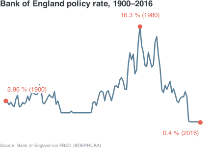
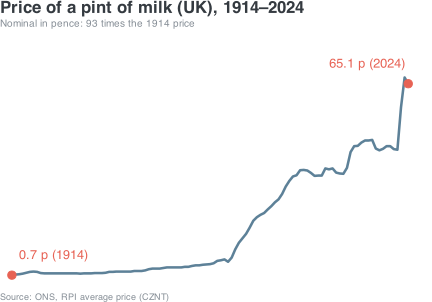
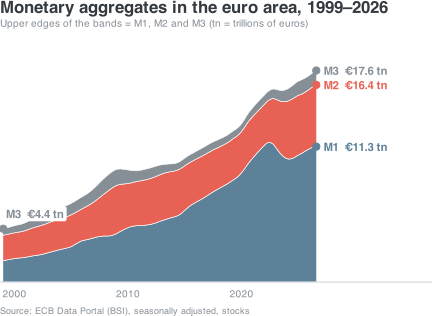
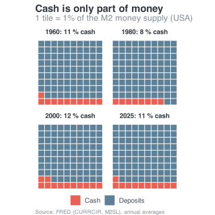
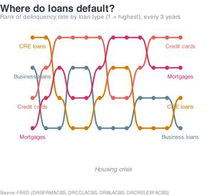

Monetary Policy Visualization
Money and Monetary Policy
Patrick Mokre
October 12, 2026
Syllabus
| Topic | Theory | Visualization |
|---|---|---|
| What is money | • Functions of money • Monetary aggregates • Money demand (Cecchetti and Schoenholz 2021, Part I) |
Classification: Transferrable vs term deposits as split between transaction balances M1 and holdings M2/M3. |
| Interest rates and present value | • Nominal and real rates • Fisher equation • How many interest rates are “the interest rate” (Cecchetti and Schoenholz 2021, Part II) |
Effective, nominal and real (CPI adjusted) deposit rates. Distribution of rates (heatmap, density plots, ridgelines). Stock rotation (maturity wall): bar charts of loans by remaining fixation period. |
| Banks as intermediaries and transmission mechanism | • Maturity transformation • Net interest margin • Propagation of policy rate to lending rate to spending chain (Cecchetti and Schoenholz 2021, Part III) |
Debt by sector (bump chart, mosaic chart) Rate pass-through (policy rate to service cost) Scatter of new volume and new rates (to businesses) reveals hysteresis. Connect sector, loan purpose, maturity class and rate fixation in Sankey diagram. |
| Financialization and debt | • Income-financed and debt-financed consumption (and wealth) Avritzer and Brochier (2025) |
Loan structure of private households. Loan purposes, loan-size class. Composition of private debt (streamgraph) |
| Debt and rate cycles | • Debt-service ratios • Variable and fixed rate borrowers over the cycle • Financial instability hypothesis Minsky (1992) |
Rate-fixation period as measure of interest rate exposure. Composition of debtors hit first by rate hikes. Maturity of new loans (streamgraph). |
| International debt | • Dominant currency paradigm (world money) • Spillovers from core to periphery • Exorbitant privilege • Global financial cycle Lapavitsas (2026) |
Domestic, EU and cross-border loans (Ridgeline) Average bank rates (Jitter plot) |
Literature

Components of the Financial System
Overview
Overview
Money
Financial Instruments
Financial instruments are also called securities, because the underlying contract is meant to secure a repayment or future payment.
- Loans
- Bonds
- Stocks
- Equity funds (mutual funds)
- Insurance
- Forward transactions (contracts for difference)
Financial Markets
- Coffee houses, taverns, trading posts
- Stock exchanges
- Electronic platforms and apps

Financial Institutions
- Banks as vaults with a payout counter
- Deposits and loans
- Dealers in financial instruments
- Separation of commercial and private banks
Regulatory Authorities
- Usury ban
- Banking licences
- House banks
- Bank supervision after financial crises
- Monitoring and punishing
- Glass-Steagall Act
- Dodd-Frank Act
- Basel III
Central Banks
- Mints
- Treasury/fiscal administration (William of Orange)
- Supply of money and credit, government bonds
Code: Bank of England policy rate
library(tidyverse)
# Download once, then reuse the local copy
f <- "boe_policy_rate.csv"
if (!file.exists(f)) {
try(download.file(
"https://fred.stlouisfed.org/graph/fredgraph.csv?id=BOEPRUKA",
f, mode = "wb", quiet = TRUE), silent = TRUE)
}
if (file.exists(f)) {
df <- read_csv(f, show_col_types = FALSE) |>
rename(date = 1, rate = 2) |>
mutate(year = as.integer(format(as.Date(date), "%Y")),
rate = as.numeric(rate)) |>
filter(year >= 1900, !is.na(rate))
y0 <- min(df$year)
y1 <- max(df$year)
# Markers: start, highest, lowest
marks <- bind_rows(
df |> slice_min(year, n = 1, with_ties = FALSE) |> mutate(vj = -1),
df |> slice_max(rate, n = 1, with_ties = FALSE) |> mutate(vj = -1),
df |> slice_min(rate, n = 1, with_ties = FALSE) |> mutate(vj = 1.8)
) |>
mutate(
hj = case_when(year == y0 ~ 0,
year >= y1 - 10 ~ 1,
TRUE ~ 0.5),
label = paste0(rate, " % (", year, ")")
)
p <- ggplot(df, aes(year, rate)) +
geom_line(colour = "#5d8198", linewidth = 1.2) +
geom_point(data = marks, colour = "#e76254", size = 3.5) +
geom_label(data = marks, aes(label = label, vjust = vj, hjust = hj),
colour = "#e76254", fill = "white", label.size = 0,
label.padding = unit(0.2, "lines"), size = 4.5) +
scale_x_continuous(expand = expansion(mult = c(0.03, 0.06))) +
scale_y_continuous(expand = expansion(mult = c(0.18, 0.15))) +
coord_cartesian(clip = "off") +
labs(title = paste0("Bank of England policy rate, ", y0, "–", y1),
caption = "Source: Bank of England via FRED (BOEPRUKA)") +
theme_void(base_size = 14) +
theme(
plot.background = element_rect(fill = "transparent", colour = NA),
panel.background = element_rect(fill = "transparent", colour = NA),
plot.title = element_text(colour = "#343a40", face = "bold",
hjust = 0, margin = margin(b = 8)),
plot.caption = element_text(colour = "#868e96", size = 9, hjust = 0,
margin = margin(t = 8))
)
print(p)
} else {
cat("Data could not be loaded.")
}Questions (Cecchetti and Schoenholtz)
- What distinguishes a debit card from a credit card?
- Are your bank deposits insured?
- Would you rather own stocks, bonds or gold?
- Would you buy shares of the company you work for?
- What information do you want before taking out a mortgage?
- What is your creditworthiness, and why does it matter?
- Do you need life insurance?
- Do you need health insurance?
- Do you need social insurance?
- Do you need pension insurance?
Money
Unit of Account
- Unit of account and unit of settlement:
- Goods and services become comparable (commensurable)
- Transactions are netted and only the difference is paid out
- Expenditures and receipts do not occur at the same time, but are put in relation to each other
- Relative prices: All goods and services are compared with one another.
Store of Value
- Means of payment are protected against rapid decay
- Cheese taxes, salt taxes, precious metals
- Liquid store of value: Money can be exchanged for goods and services very quickly and cheaply.
- Gold less quickly, bonds even more slowly, real estate very slowly.
- Financial institutions distinguish between market liquidity and funding liquidity.
Commodity Money
- Early means of payment had intrinsic value: silk, butter, salt, animal teeth.
- They also had further useful properties:
- Durability
- Divisibility
- Portability
- Standardizability.
- Gold runs through the history of means of payment:
- Scarce (high value-to-weight ratio)
- Widely known and distributed
- Purity can be determined
- Standardizable and divisible without loss
- Durable
Paper Money
- In the 17th century: paper money developed in Sweden as an alternative to copper money (not very valuable)
- Directly exchangeable for metal money
- More banknotes than available metal, soon followed by loss of confidence
- From the early 18th century: paper money in the American colonies and France.

Paper Money
- In the American Civil War, both sides paid for personnel and services with paper money, backed by a government promise.
- The winning side’s paper money is recognized as a means of payment (greenback); the losing side’s banknotes are now only of interest to collectors.
Fiat Money
- Modern paper money has little intrinsic value and low production costs.
- Acceptance by government bodies and private businesses is legally required.
- Backed paper money: precious metal of equal value is held, slowing devaluation.
- Unbacked paper money (true fiat money): Exchangeability depends on market conditions
Fiat Money
- Just like commodity and metal money, tied to general acceptance.
- Money supply is centrally controlled and easy to expand (fear of devaluation).
- Aim of fiat money: Stronger price development than commodity money; presupposes that the money supply grows more slowly than real output.
Electronic Means of Payment
- Debit card:
- Payment instruction to the bank.
- Payment by the cardholder.
- Financed by fees.
- Credit card:
- Bank advances the funds.
- Payment by the bank.
- Financed by interest.
- Direct transfer:
- Electronic payment instruction
- Transactions via a clearing house (automated clearing houses, ACH)
- Between financial institutions: Only the difference is actually transferred.
- Now often tied to mobile phone contracts (mobile parking in Vienna, M-Pesa in Kenya)
Inflation
- Inflation means that goods and services generally become more expensive.
- Inflation means that money is worth less.
- Money is worth less when more money circulates than goods and services.

Code: Price of a pint of milk (ONS)
library(tidyverse)
f <- "ons_milk_pint.csv"
url <- paste0("https://www.ons.gov.uk/generator?format=csv&uri=",
"/economy/inflationandpriceindices/timeseries/cznt/mm23")
msg <- character()
# A valid ONS file contains the line "CDID" near the top
ok_file <- function(path) {
file.exists(path) && file.size(path) > 500 &&
any(grepl("CDID", readLines(path, n = 15, warn = FALSE)))
}
if (!ok_file(f)) {
unlink(f)
ua <- "Mozilla/5.0 (Windows NT 10.0; Win64; x64) AppleWebKit/537.36"
# Try 1: base R with libcurl and a browser user agent
r1 <- try(download.file(url, f, mode = "wb", quiet = TRUE,
method = "libcurl",
headers = c("User-Agent" = ua)), silent = TRUE)
if (inherits(r1, "try-error")) msg <- c(msg, conditionMessage(attr(r1, "condition")))
# Try 2: curl package (install.packages("curl") if missing)
if (!ok_file(f) && requireNamespace("curl", quietly = TRUE)) {
h <- curl::new_handle(useragent = ua)
r2 <- try(curl::curl_download(url, f, handle = h), silent = TRUE)
if (inherits(r2, "try-error")) msg <- c(msg, conditionMessage(attr(r2, "condition")))
}
# Try 3: read straight from the URL
if (!ok_file(f)) {
r3 <- try(writeLines(readLines(url, warn = FALSE), f), silent = TRUE)
if (inherits(r3, "try-error")) msg <- c(msg, conditionMessage(attr(r3, "condition")))
}
if (!ok_file(f)) unlink(f)
}
if (ok_file(f)) {
# Metadata lines first, then annual, quarterly and monthly rows.
# Keep only the annual rows (a plain four-digit year).
df <- read_csv(f, col_names = c("period", "value"),
col_types = cols(.default = col_character()),
show_col_types = FALSE) |>
filter(grepl("^[0-9]{4}$", period)) |>
mutate(year = as.integer(period), pence = as.numeric(value)) |>
filter(!is.na(pence))
y0 <- min(df$year)
y1 <- max(df$year)
ratio <- round(df$pence[df$year == y1] / df$pence[df$year == y0])
marks <- bind_rows(
df |> slice_min(year, n = 1) |> mutate(hj = 0, vj = -0.8),
df |> slice_max(year, n = 1) |> mutate(hj = 1, vj = -0.8)
) |>
mutate(label = paste0(format(round(pence, 1), nsmall = 1), " p (", year, ")"))
p <- ggplot(df, aes(year, pence)) +
geom_line(colour = "#5d8198", linewidth = 1.2) +
geom_point(data = marks, colour = "#e76254", size = 3.5) +
geom_label(data = marks,
aes(label = label, hjust = hj, vjust = vj),
colour = "#e76254", fill = "white", label.size = 0,
label.padding = unit(0.2, "lines"), size = 4.5) +
scale_x_continuous(expand = expansion(mult = c(0.03, 0.06))) +
scale_y_continuous(expand = expansion(mult = c(0.05, 0.2))) +
coord_cartesian(clip = "off") +
labs(title = paste0("Price of a pint of milk (UK), ", y0, "–", y1),
subtitle = paste0("Nominal in pence: ", ratio, " times the ", y0, " price"),
caption = "Source: ONS, RPI average price (CZNT)") +
theme_void(base_size = 14) +
theme(
plot.background = element_rect(fill = "transparent", colour = NA),
panel.background = element_rect(fill = "transparent", colour = NA),
plot.title = element_text(colour = "#343a40", face = "bold",
hjust = 0, margin = margin(b = 2)),
plot.subtitle = element_text(colour = "#868e96", size = 10, hjust = 0,
margin = margin(b = 8)),
plot.caption = element_text(colour = "#868e96", size = 9, hjust = 0,
margin = margin(t = 8))
)
print(p)
} else {
cat("Data could not be loaded.\n",
"Error: ", paste(unique(msg), collapse = " | "), "\n",
"Manual: download the CSV from the ONS page (cznt/mm23) and save it as ",
f, " next to the .qmd.", sep = "")
}Inflation
- More money than goods circulates when the money supply is suddenly expanded.
- Fewer goods than money circulate when more is saved and less is invested (or consumed).
- Inflation becomes tangible when prices are actually raised (by firms) and higher prices are actually paid (by households and firms).
Counting Money
Means of payment can be ranked by liquidity:
- Cash
- Call deposit accounts
- Term deposit accounts
- Government bonds
- Stocks
Monetary Aggregates
- M1: Cash and deposit accounts (almost no interest)
- M2: M1 + term deposits under USD 100,000, savings accounts, investment funds, … (interest-bearing)
- M3: M2 + deposits over USD 100,000
- M4 (British): Cash in circulation, bank deposits, building society deposits, certificates of deposit.

Code: Monetary aggregates in the euro area (ECB)
library(tidyverse)
# Download once from the ECB Data Portal, then reuse the local copy
f <- "ecb_money_aggregates.csv"
if (!file.exists(f)) {
try(download.file(
paste0("https://data-api.ecb.europa.eu/service/data/BSI/",
"M.U2.Y.V.M10+M20+M30.X.1.U2.2300.Z01.E",
"?format=csvdata&startPeriod=1999-01"),
f, mode = "wb", quiet = TRUE), silent = TRUE)
}
if (file.exists(f)) {
# Values in € trillions; the ECB reports millions
wide <- read_csv(f, show_col_types = FALSE) |>
transmute(item = sub(".*\\.(M[123]0)\\..*", "\\1", KEY),
period = TIME_PERIOD, value = OBS_VALUE / 1e6) |>
pivot_wider(names_from = item, values_from = value) |>
mutate(x = as.integer(substr(period, 1, 4)) +
(as.integer(substr(period, 6, 7)) - 1) / 12)
lvl <- c("M3 – M2", "M2 – M1", "M1") # M1 sits at the bottom
df <- wide |>
transmute(x, `M1` = M10, `M2 – M1` = M20 - M10, `M3 – M2` = M30 - M20) |>
pivot_longer(-x, names_to = "aggregat", values_to = "wert")
fmt <- function(v) paste0("€", format(round(v, 1), nsmall = 1), " tn")
# Edge markers: aggregate levels = upper edges of the bands
first <- wide |> slice_min(x, n = 1)
last <- wide |> slice_max(x, n = 1)
ends <- tibble(
x = last$x, name = c("M1", "M2", "M3"),
y = c(last$M10, last$M20, last$M30)
) |> mutate(label = paste0(name, " ", fmt(y)))
start <- tibble(x = first$x, name = "M3", y = first$M30,
label = paste0("M3 ", fmt(first$M30)))
marks <- bind_rows(ends, start)
fills <- c("M1" = "#5d8198", "M2 – M1" = "#e76254", "M3 – M2" = "#868e96")
cols <- c("M1" = "#5d8198", "M2" = "#e76254", "M3" = "#868e96")
p <- ggplot() +
geom_pemstream(data = df, aes(x = x, y = wert, fill = aggregat),
span = 0.08, stack_order = lvl, center = FALSE,
colour = "white", linewidth = 0.3) +
geom_hline(yintercept = 0, colour = "#ced4da", linewidth = 0.5) +
geom_point(data = marks, aes(x = x, y = y, colour = name), size = 3) +
geom_label(data = ends,
aes(x = x + 0.4, y = y, label = label, colour = name),
hjust = 0, fill = "white", label.size = 0,
label.padding = unit(0.2, "lines"),
size = 4, fontface = "bold") +
geom_label(data = start,
aes(x = x, y = y, label = label, colour = name),
hjust = 0, vjust = -0.5, fill = "white", label.size = 0,
label.padding = unit(0.2, "lines"),
size = 4, fontface = "bold") +
scale_fill_manual(values = fills) +
scale_colour_manual(values = cols) +
scale_x_continuous(breaks = seq(2000, 2020, 10),
expand = expansion(mult = c(0.01, 0.35))) +
scale_y_continuous(expand = expansion(mult = c(0, 0.15))) +
coord_cartesian(clip = "off") +
labs(title = paste0("Monetary aggregates in the euro area, ",
floor(min(df$x)), "–", floor(max(df$x))),
subtitle = "Upper edges of the bands = M1, M2 and M3 (tn = trillions of euros)",
caption = "Source: ECB Data Portal (BSI), seasonally adjusted, stocks") +
theme_void(base_size = 14) +
theme(
legend.position = "none",
plot.background = element_rect(fill = "transparent", colour = NA),
panel.background = element_rect(fill = "transparent", colour = NA),
axis.text.x = element_text(colour = "#868e96", size = 10,
margin = margin(t = 6)),
plot.title = element_text(colour = "#343a40", face = "bold",
hjust = 0, margin = margin(b = 2)),
plot.subtitle = element_text(colour = "#868e96", size = 10, hjust = 0,
margin = margin(b = 8)),
plot.caption = element_text(colour = "#868e96", size = 9, hjust = 0,
margin = margin(t = 8))
)
print(p)
} else {
cat("Data could not be loaded.")
}Printing Money
- Physical money production by central banks, with seigniorage profit (difference between production cost and face value)
- Credit creation by commercial banks and credit institutions
- Every asset is mirrored by a liability.
Questions (Cecchetti and Schoenholtz)
- How can you pay for a coffee?
- Which payment method is cheapest for the recipient?
- What does money have to do with the specialization of labour?
- What would be an appropriate unit of account and settlement in a cashless economy?
- What examples of direct transfers do you know?
- What are the advantages and disadvantages for an EU country of joining the euro area?
- Why are tomatoes, bricks and cattle not good commodity monies?
- What are the current estimates for the monetary aggregates M1, M2, M3 and M4 in Austria?
Financial Instruments
Borrowing Money
Direct loans:
- Private loan
- Promissory note
- Moneylenders and loan sharks
Borrowing Money
Indirect loans
- Banks intermediate between depositors and borrowers
- Risk transformation
- Maturity transformation
- Whoever borrows money simultaneously creates assets (what the money is spent on) and liabilities (the debt)
- Whoever lends money also creates assets (the loan amount) and liabilities (where the money comes from)
Borrowing Money
- Not all loans are backed by deposits: banks create money by granting loans.
- Loans are assets: they can be traded and therefore used as collateral for further loans, which in turn create money.
- Only a fraction of balances and loans circulate as banknotes. For the rest, payments are simply offset against each other (clearing).

Code: Cash and deposits (FRED)
# Data: FRED (St. Louis Fed); download once and save as CSV next to the qmd
get_fred <- function(id) {
f <- paste0("fred_", id, ".csv")
if (!file.exists(f)) {
try(download.file(
paste0("https://fred.stlouisfed.org/graph/fredgraph.csv?id=", id),
f, mode = "wb", quiet = TRUE), silent = TRUE)
}
if (!file.exists(f)) return(NULL)
d <- read.csv(f)
names(d) <- c("date", "value")
d$date <- as.Date(d$date)
d$value <- suppressWarnings(as.numeric(d$value))
d[!is.na(d$value), ]
}
cur <- get_fred("CURRCIR") # Currency in circulation (USD bn)
m2 <- get_fred("M2SL") # Money supply M2 (USD bn)
if (is.null(cur) || is.null(m2)) {
cat("Data could not be loaded.")
} else {
yrs <- c(1960, 1980, 2000, 2025)
d <- inner_join(rename(cur, bar = value), rename(m2, m2 = value), by = "date") |>
mutate(year = as.integer(format(date, "%Y"))) |>
filter(year %in% yrs) |>
group_by(year) |>
summarise(bar = mean(bar), m2 = mean(m2), .groups = "drop") |>
mutate(Deposits = m2 - bar,
panel = factor(paste0(year, ": ", round(100 * bar / m2), " % cash"),
levels = paste0(year, ": ", round(100 * bar / m2), " % cash"))) |>
select(panel, Cash = bar, Deposits) |>
pivot_longer(c(Cash, Deposits), names_to = "art", values_to = "wert")
p <- ggplot(d, aes(y = wert, fill = art)) +
geom_pemwaffle(stack_order = c("Cash", "Deposits")) +
facet_wrap(~panel, nrow = 2) +
coord_equal() +
scale_y_reverse() +
scale_fill_manual(values = c(Cash = "#e76254", Deposits = "#5d8198"),
name = NULL) +
labs(title = "Cash is only part of money",
subtitle = "1 tile = 1% of the M2 money supply (USA)",
caption = "Source: FRED (CURRCIR, M2SL), annual averages") +
theme_void(base_size = 14) +
theme(
plot.background = element_rect(fill = "transparent", colour = NA),
panel.background = element_rect(fill = "transparent", colour = NA),
plot.title = element_text(colour = "#343a40", face = "bold", hjust = 0),
plot.subtitle = element_text(colour = "#868e96", hjust = 0,
margin = margin(b = 8)),
plot.caption = element_text(colour = "#868e96", size = 9, hjust = 0),
strip.text = element_text(colour = "#343a40", face = "bold",
margin = margin(b = 4)),
legend.position = "bottom",
legend.text = element_text(colour = "#495057")
)
print(p)
}Direct and Indirect Lending
- Trend towards institutionalization of direct loans (the distinction blurs).
- Modern distinction: Who owns the asset (the loan):
- Direct loan: creditor
- Indirect: the creditor holds a claim against an institution, which in turn holds one against the borrower.
Financial Instruments
- Contractual obligation to pay or transfer value
- Means of payment (stock options instead of a pay rise)
- Store of value
- Risk transfer
Risk Transfer
- Direct lending: Either performance as contracted or total default.
- Indirect lending: Partial default, manageable when credit risks are independent.
- Credit default risks are not always independent random events (housing crisis 2007)

Code: Delinquency rates by loan type (FRED)
# Data: FRED, delinquency rates at US commercial banks (seasonally adjusted, quarterly)
get_fred <- function(id) {
f <- paste0("fred_", id, ".csv")
if (!file.exists(f)) {
try(download.file(
paste0("https://fred.stlouisfed.org/graph/fredgraph.csv?id=", id),
f, mode = "wb", quiet = TRUE), silent = TRUE)
}
if (!file.exists(f)) return(NULL)
d <- read.csv(f)
names(d) <- c("date", "value")
d$date <- as.Date(d$date)
d$value <- suppressWarnings(as.numeric(d$value))
d[!is.na(d$value), ]
}
ids <- c(Mortgages = "DRSFRMACBS",
`Credit cards` = "DRCCLACBS",
`Business loans` = "DRBLACBS",
`CRE loans` = "DRCRELEXFACBS")
dl <- lapply(ids, get_fred)
if (any(sapply(dl, is.null))) {
cat("Data could not be loaded.")
} else {
jahre <- seq(1992, 2025, by = 3)
d <- bind_rows(dl, .id = "art") |>
mutate(jahr = as.integer(format(date, "%Y"))) |>
filter(jahr %in% jahre) |>
group_by(art, jahr) |>
summarise(wert = mean(value), .groups = "drop")
p <- ggplot(d, aes(x = jahr, y = wert, colour = art)) +
geom_pembumpchart(point_size = 2.4, line_width = 1.1,
labels = "first_last", label_size = 3.3) +
annotate("text", x = 2010, y = 0.35, label = "Housing crisis",
colour = "#868e96", size = 3.6, fontface = "italic") +
scale_y_reverse(expand = expansion(add = c(0.6, 0.4))) +
scale_x_continuous(expand = expansion(mult = 0.22)) +
scale_colour_manual(values = c(Mortgages = "#d03161",
`Credit cards` = "#e76254",
`Business loans` = "#5d8198",
`CRE loans` = "#d37b00")) +
coord_cartesian(clip = "off") +
labs(title = "Where do loans default?",
subtitle = "Rank of delinquency rate by loan type (1 = highest), every 3 years",
caption = "Source: FRED (DRSFRMACBS, DRCCLACBS, DRBLACBS, DRCRELEXFACBS)") +
theme_void(base_size = 14) +
theme(
plot.background = element_rect(fill = "transparent", colour = NA),
panel.background = element_rect(fill = "transparent", colour = NA),
plot.title = element_text(colour = "#343a40", face = "bold", hjust = 0),
plot.subtitle = element_text(colour = "#868e96", size = 10, hjust = 0,
margin = margin(b = 8)),
plot.caption = element_text(colour = "#868e96", size = 8, hjust = 0),
legend.position = "none"
)
print(p)
}Information in Financial Instruments
- Financial instruments are complex; understanding them costs time or money (lawyers’ time).
- Developing a financial instrument means standardization and translation.
- Protection against asymmetric information
Simple and Derivative Instruments
- Simple financial instruments: Value and payments depend solely on the economic status of the borrower (interest, dividends, …).
- Derivative instruments: Value and payments depend on the performance of other instruments.
- Derivative instruments: Spread risks among many investors.
Valuing Instruments
A financial instrument has a higher price if a larger payment is made sooner and with higher probability.
- Amount of the agreed payments.
- Timing of the agreed payments.
- Circumstances of the agreed payments.
Examples of Financial Instruments
- Bank loans
- Bonds (governments and firms)
- Real estate mortgages
- Stocks
- Asset-backed securities
Risk Transformation
- Insurance contracts: Payout when an event occurs.
- Futures: A transaction is concluded in the future at a price fixed in advance.
- Options: The right to conclude a transaction in the future at a fixed price.
- Swaps: Contract to exchange two payments in the future (often in different currencies).
Financial Markets
- Liquidity
- Collect and communicate information
- Organize risk sharing
Transaction Costs
- Financial markets distribute liquidity
- Transaction costs arise but should be low
- Information mainly about prices
Informative Prices
- Prices are shaped by competition: High prices indicate low supply or high demand.
- Without additional information, this gives an idea of which financial instruments their owners and other buyers see as promising.
- Large groups rarely err, but when they do, they err badly (bubbles)
Primary and Secondary Markets
- Primary market: New financial instruments
- Secondary market: All subsequent changes of ownership
Centralized and Over-the-Counter Markets
- Centralized markets: Dealers meet at a physical location.
- Over-the-counter: Decentralized markets with electronic transactions
- Electronic networks: Platforms that connect sellers and buyers (without brokers and dealers).
Classification by Function
- Debt and equity: Simple financial instruments (loans and shares) are sold for money.
- Derivatives markets: Financial derivatives are traded for future payments.
- Loans on money markets have a maturity of under one year; longer maturities are traded on bond markets.
Financial Markets as Imagined
- Low transaction costs
- Accurate and accessible information
- Investor protection against theft, fraud, manipulation.
Financial Markets as They Are
Financial markets are shaped by power imbalances and the exercise of power.
- Size and reputation determine scope of action, which gives rise to asymmetric information.
- Agreements and mutual obligations are opaque, which gives rise to distorted price signals.
- Investing in overvaluation is profitable, which gives rise to bubbles.
- Small investors have limited room for manoeuvre, which gives rise to exploitation.
Financial Institutions
- Combine long-term loans with deposits due daily – maturity transformation
- Combine many loans (or other instruments) with different default risk – risk transformation.
- Organize access to financial markets – transaction costs
Structure of the Financial Industry
- Banks (depository institutions): Take deposits and make loans
- Insurers: Collect premiums, invest them, pay out claims (high liquidity).
- Pension funds: Collect contributions, invest them, pay out claims (low liquidity).
Let’s start coding with the penguins
The Palmer Penguins


The data was collected from 2007-2009 by Dr. Kristen Gorman with the Palmer Station Long Term Ecological Research Program. The dataset contains data for 344 penguins. There are 3 different species of penguins, collected from 3 islands in the Palmer Archipelago, Antarctica.
Load the packages
species island bill_len bill_dep flipper_len body_mass sex year
1 Adelie Torgersen 39.1 18.7 181 3750 male 2007
2 Adelie Torgersen 39.5 17.4 186 3800 female 2007
3 Adelie Torgersen 40.3 18.0 195 3250 female 2007
4 Adelie Torgersen NA NA NA NA <NA> 2007
5 Adelie Torgersen 36.7 19.3 193 3450 female 2007
6 Adelie Torgersen 39.3 20.6 190 3650 male 2007Take a look at the data
Rows: 344
Columns: 8
$ species <fct> Adelie, Adelie, Adelie, Adelie, Adelie, Adelie, Adelie, Ad…
$ island <fct> Torgersen, Torgersen, Torgersen, Torgersen, Torgersen, Tor…
$ bill_len <dbl> 39.1, 39.5, 40.3, NA, 36.7, 39.3, 38.9, 39.2, 34.1, 42.0, …
$ bill_dep <dbl> 18.7, 17.4, 18.0, NA, 19.3, 20.6, 17.8, 19.6, 18.1, 20.2, …
$ flipper_len <int> 181, 186, 195, NA, 193, 190, 181, 195, 193, 190, 186, 180,…
$ body_mass <int> 3750, 3800, 3250, NA, 3450, 3650, 3625, 4675, 3475, 4250, …
$ sex <fct> male, female, female, NA, female, male, female, male, NA, …
$ year <int> 2007, 2007, 2007, 2007, 2007, 2007, 2007, 2007, 2007, 2007…Descriptive statistics
Min. 1st Qu. Median Mean 3rd Qu. Max. NAs
32.10 39.23 44.45 43.92 48.50 59.60 2 Exercise: mean flipper length
What is the mean flipper length? . . .
[1] 200.9152Factor variables
Adelie Chinstrap Gentoo
152 68 124 Exercise: Torgersen island
How many penguins were recorded on Torgersen island? . . .
Biscoe Dream Torgersen
168 124 52 Basic tidyr: select and filter
Use a pipe! . . .
species island
1 Adelie Torgersen
2 Adelie Torgersen
3 Adelie Torgersen
4 Adelie Torgersen
5 Adelie Torgersen
6 Adelie Torgersen
7 Adelie Torgersen
8 Adelie Torgersen
9 Adelie Torgersen
10 Adelie Torgersen
11 Adelie Torgersen
12 Adelie Torgersen
13 Adelie Torgersen
14 Adelie Torgersen
15 Adelie Torgersen
16 Adelie Torgersen
17 Adelie Torgersen
18 Adelie Torgersen
19 Adelie Torgersen
20 Adelie Torgersen
21 Adelie Biscoe
22 Adelie Biscoe
23 Adelie Biscoe
24 Adelie Biscoe
25 Adelie Biscoe
26 Adelie Biscoe
27 Adelie Biscoe
28 Adelie Biscoe
29 Adelie Biscoe
30 Adelie Biscoe
31 Adelie Dream
32 Adelie Dream
33 Adelie Dream
34 Adelie Dream
35 Adelie Dream
36 Adelie Dream
37 Adelie Dream
38 Adelie Dream
39 Adelie Dream
40 Adelie Dream
41 Adelie Dream
42 Adelie Dream
43 Adelie Dream
44 Adelie Dream
45 Adelie Dream
46 Adelie Dream
47 Adelie Dream
48 Adelie Dream
49 Adelie Dream
50 Adelie Dream
51 Adelie Biscoe
52 Adelie Biscoe
53 Adelie Biscoe
54 Adelie Biscoe
55 Adelie Biscoe
56 Adelie Biscoe
57 Adelie Biscoe
58 Adelie Biscoe
59 Adelie Biscoe
60 Adelie Biscoe
61 Adelie Biscoe
62 Adelie Biscoe
63 Adelie Biscoe
64 Adelie Biscoe
65 Adelie Biscoe
66 Adelie Biscoe
67 Adelie Biscoe
68 Adelie Biscoe
69 Adelie Torgersen
70 Adelie Torgersen
71 Adelie Torgersen
72 Adelie Torgersen
73 Adelie Torgersen
74 Adelie Torgersen
75 Adelie Torgersen
76 Adelie Torgersen
77 Adelie Torgersen
78 Adelie Torgersen
79 Adelie Torgersen
80 Adelie Torgersen
81 Adelie Torgersen
82 Adelie Torgersen
83 Adelie Torgersen
84 Adelie Torgersen
85 Adelie Dream
86 Adelie Dream
87 Adelie Dream
88 Adelie Dream
89 Adelie Dream
90 Adelie Dream
91 Adelie Dream
92 Adelie Dream
93 Adelie Dream
94 Adelie Dream
95 Adelie Dream
96 Adelie Dream
97 Adelie Dream
98 Adelie Dream
99 Adelie Dream
100 Adelie Dream
101 Adelie Biscoe
102 Adelie Biscoe
103 Adelie Biscoe
104 Adelie Biscoe
105 Adelie Biscoe
106 Adelie Biscoe
107 Adelie Biscoe
108 Adelie Biscoe
109 Adelie Biscoe
110 Adelie Biscoe
111 Adelie Biscoe
112 Adelie Biscoe
113 Adelie Biscoe
114 Adelie Biscoe
115 Adelie Biscoe
116 Adelie Biscoe
117 Adelie Torgersen
118 Adelie Torgersen
119 Adelie Torgersen
120 Adelie Torgersen
121 Adelie Torgersen
122 Adelie Torgersen
123 Adelie Torgersen
124 Adelie Torgersen
125 Adelie Torgersen
126 Adelie Torgersen
127 Adelie Torgersen
128 Adelie Torgersen
129 Adelie Torgersen
130 Adelie Torgersen
131 Adelie Torgersen
132 Adelie Torgersen
133 Adelie Dream
134 Adelie Dream
135 Adelie Dream
136 Adelie Dream
137 Adelie Dream
138 Adelie Dream
139 Adelie Dream
140 Adelie Dream
141 Adelie Dream
142 Adelie Dream
143 Adelie Dream
144 Adelie Dream
145 Adelie Dream
146 Adelie Dream
147 Adelie Dream
148 Adelie Dream
149 Adelie Dream
150 Adelie Dream
151 Adelie Dream
152 Adelie Dream
153 Gentoo Biscoe
154 Gentoo Biscoe
155 Gentoo Biscoe
156 Gentoo Biscoe
157 Gentoo Biscoe
158 Gentoo Biscoe
159 Gentoo Biscoe
160 Gentoo Biscoe
161 Gentoo Biscoe
162 Gentoo Biscoe
163 Gentoo Biscoe
164 Gentoo Biscoe
165 Gentoo Biscoe
166 Gentoo Biscoe
167 Gentoo Biscoe
168 Gentoo Biscoe
169 Gentoo Biscoe
170 Gentoo Biscoe
171 Gentoo Biscoe
172 Gentoo Biscoe
173 Gentoo Biscoe
174 Gentoo Biscoe
175 Gentoo Biscoe
176 Gentoo Biscoe
177 Gentoo Biscoe
178 Gentoo Biscoe
179 Gentoo Biscoe
180 Gentoo Biscoe
181 Gentoo Biscoe
182 Gentoo Biscoe
183 Gentoo Biscoe
184 Gentoo Biscoe
185 Gentoo Biscoe
186 Gentoo Biscoe
187 Gentoo Biscoe
188 Gentoo Biscoe
189 Gentoo Biscoe
190 Gentoo Biscoe
191 Gentoo Biscoe
192 Gentoo Biscoe
193 Gentoo Biscoe
194 Gentoo Biscoe
195 Gentoo Biscoe
196 Gentoo Biscoe
197 Gentoo Biscoe
198 Gentoo Biscoe
199 Gentoo Biscoe
200 Gentoo Biscoe
201 Gentoo Biscoe
202 Gentoo Biscoe
203 Gentoo Biscoe
204 Gentoo Biscoe
205 Gentoo Biscoe
206 Gentoo Biscoe
207 Gentoo Biscoe
208 Gentoo Biscoe
209 Gentoo Biscoe
210 Gentoo Biscoe
211 Gentoo Biscoe
212 Gentoo Biscoe
213 Gentoo Biscoe
214 Gentoo Biscoe
215 Gentoo Biscoe
216 Gentoo Biscoe
217 Gentoo Biscoe
218 Gentoo Biscoe
219 Gentoo Biscoe
220 Gentoo Biscoe
221 Gentoo Biscoe
222 Gentoo Biscoe
223 Gentoo Biscoe
224 Gentoo Biscoe
225 Gentoo Biscoe
226 Gentoo Biscoe
227 Gentoo Biscoe
228 Gentoo Biscoe
229 Gentoo Biscoe
230 Gentoo Biscoe
231 Gentoo Biscoe
232 Gentoo Biscoe
233 Gentoo Biscoe
234 Gentoo Biscoe
235 Gentoo Biscoe
236 Gentoo Biscoe
237 Gentoo Biscoe
238 Gentoo Biscoe
239 Gentoo Biscoe
240 Gentoo Biscoe
241 Gentoo Biscoe
242 Gentoo Biscoe
243 Gentoo Biscoe
244 Gentoo Biscoe
245 Gentoo Biscoe
246 Gentoo Biscoe
247 Gentoo Biscoe
248 Gentoo Biscoe
249 Gentoo Biscoe
250 Gentoo Biscoe
251 Gentoo Biscoe
252 Gentoo Biscoe
253 Gentoo Biscoe
254 Gentoo Biscoe
255 Gentoo Biscoe
256 Gentoo Biscoe
257 Gentoo Biscoe
258 Gentoo Biscoe
259 Gentoo Biscoe
260 Gentoo Biscoe
261 Gentoo Biscoe
262 Gentoo Biscoe
263 Gentoo Biscoe
264 Gentoo Biscoe
265 Gentoo Biscoe
266 Gentoo Biscoe
267 Gentoo Biscoe
268 Gentoo Biscoe
269 Gentoo Biscoe
270 Gentoo Biscoe
271 Gentoo Biscoe
272 Gentoo Biscoe
273 Gentoo Biscoe
274 Gentoo Biscoe
275 Gentoo Biscoe
276 Gentoo Biscoe
277 Chinstrap Dream
278 Chinstrap Dream
279 Chinstrap Dream
280 Chinstrap Dream
281 Chinstrap Dream
282 Chinstrap Dream
283 Chinstrap Dream
284 Chinstrap Dream
285 Chinstrap Dream
286 Chinstrap Dream
287 Chinstrap Dream
288 Chinstrap Dream
289 Chinstrap Dream
290 Chinstrap Dream
291 Chinstrap Dream
292 Chinstrap Dream
293 Chinstrap Dream
294 Chinstrap Dream
295 Chinstrap Dream
296 Chinstrap Dream
297 Chinstrap Dream
298 Chinstrap Dream
299 Chinstrap Dream
300 Chinstrap Dream
301 Chinstrap Dream
302 Chinstrap Dream
303 Chinstrap Dream
304 Chinstrap Dream
305 Chinstrap Dream
306 Chinstrap Dream
307 Chinstrap Dream
308 Chinstrap Dream
309 Chinstrap Dream
310 Chinstrap Dream
311 Chinstrap Dream
312 Chinstrap Dream
313 Chinstrap Dream
314 Chinstrap Dream
315 Chinstrap Dream
316 Chinstrap Dream
317 Chinstrap Dream
318 Chinstrap Dream
319 Chinstrap Dream
320 Chinstrap Dream
321 Chinstrap Dream
322 Chinstrap Dream
323 Chinstrap Dream
324 Chinstrap Dream
325 Chinstrap Dream
326 Chinstrap Dream
327 Chinstrap Dream
328 Chinstrap Dream
329 Chinstrap Dream
330 Chinstrap Dream
331 Chinstrap Dream
332 Chinstrap Dream
333 Chinstrap Dream
334 Chinstrap Dream
335 Chinstrap Dream
336 Chinstrap Dream
337 Chinstrap Dream
338 Chinstrap Dream
339 Chinstrap Dream
340 Chinstrap Dream
341 Chinstrap Dream
342 Chinstrap Dream
343 Chinstrap Dream
344 Chinstrap Dream species island bill_len bill_dep flipper_len body_mass sex year
1 Adelie Torgersen 39.1 18.7 181 3750 male 2007
2 Adelie Torgersen 39.5 17.4 186 3800 female 2007
3 Adelie Torgersen 40.3 18.0 195 3250 female 2007
4 Adelie Torgersen NA NA NA NA <NA> 2007
5 Adelie Torgersen 36.7 19.3 193 3450 female 2007
6 Adelie Torgersen 39.3 20.6 190 3650 male 2007
7 Adelie Torgersen 38.9 17.8 181 3625 female 2007
8 Adelie Torgersen 39.2 19.6 195 4675 male 2007
9 Adelie Torgersen 34.1 18.1 193 3475 <NA> 2007
10 Adelie Torgersen 42.0 20.2 190 4250 <NA> 2007
11 Adelie Torgersen 37.8 17.1 186 3300 <NA> 2007
12 Adelie Torgersen 37.8 17.3 180 3700 <NA> 2007
13 Adelie Torgersen 41.1 17.6 182 3200 female 2007
14 Adelie Torgersen 38.6 21.2 191 3800 male 2007
15 Adelie Torgersen 34.6 21.1 198 4400 male 2007
16 Adelie Torgersen 36.6 17.8 185 3700 female 2007
17 Adelie Torgersen 38.7 19.0 195 3450 female 2007
18 Adelie Torgersen 42.5 20.7 197 4500 male 2007
19 Adelie Torgersen 34.4 18.4 184 3325 female 2007
20 Adelie Torgersen 46.0 21.5 194 4200 male 2007
21 Adelie Biscoe 37.8 18.3 174 3400 female 2007
22 Adelie Biscoe 37.7 18.7 180 3600 male 2007
23 Adelie Biscoe 35.9 19.2 189 3800 female 2007
24 Adelie Biscoe 38.2 18.1 185 3950 male 2007
25 Adelie Biscoe 38.8 17.2 180 3800 male 2007
26 Adelie Biscoe 35.3 18.9 187 3800 female 2007
27 Adelie Biscoe 40.6 18.6 183 3550 male 2007
28 Adelie Biscoe 40.5 17.9 187 3200 female 2007
29 Adelie Biscoe 37.9 18.6 172 3150 female 2007
30 Adelie Biscoe 40.5 18.9 180 3950 male 2007
31 Adelie Dream 39.5 16.7 178 3250 female 2007
32 Adelie Dream 37.2 18.1 178 3900 male 2007
33 Adelie Dream 39.5 17.8 188 3300 female 2007
34 Adelie Dream 40.9 18.9 184 3900 male 2007
35 Adelie Dream 36.4 17.0 195 3325 female 2007
36 Adelie Dream 39.2 21.1 196 4150 male 2007
37 Adelie Dream 38.8 20.0 190 3950 male 2007
38 Adelie Dream 42.2 18.5 180 3550 female 2007
39 Adelie Dream 37.6 19.3 181 3300 female 2007
40 Adelie Dream 39.8 19.1 184 4650 male 2007
41 Adelie Dream 36.5 18.0 182 3150 female 2007
42 Adelie Dream 40.8 18.4 195 3900 male 2007
43 Adelie Dream 36.0 18.5 186 3100 female 2007
44 Adelie Dream 44.1 19.7 196 4400 male 2007
45 Adelie Dream 37.0 16.9 185 3000 female 2007
46 Adelie Dream 39.6 18.8 190 4600 male 2007
47 Adelie Dream 41.1 19.0 182 3425 male 2007
48 Adelie Dream 37.5 18.9 179 2975 <NA> 2007
49 Adelie Dream 36.0 17.9 190 3450 female 2007
50 Adelie Dream 42.3 21.2 191 4150 male 2007
51 Adelie Biscoe 39.6 17.7 186 3500 female 2008
52 Adelie Biscoe 40.1 18.9 188 4300 male 2008
53 Adelie Biscoe 35.0 17.9 190 3450 female 2008
54 Adelie Biscoe 42.0 19.5 200 4050 male 2008
55 Adelie Biscoe 34.5 18.1 187 2900 female 2008
56 Adelie Biscoe 41.4 18.6 191 3700 male 2008
57 Adelie Biscoe 39.0 17.5 186 3550 female 2008
58 Adelie Biscoe 40.6 18.8 193 3800 male 2008
59 Adelie Biscoe 36.5 16.6 181 2850 female 2008
60 Adelie Biscoe 37.6 19.1 194 3750 male 2008
61 Adelie Biscoe 35.7 16.9 185 3150 female 2008
62 Adelie Biscoe 41.3 21.1 195 4400 male 2008
63 Adelie Biscoe 37.6 17.0 185 3600 female 2008
64 Adelie Biscoe 41.1 18.2 192 4050 male 2008
65 Adelie Biscoe 36.4 17.1 184 2850 female 2008
66 Adelie Biscoe 41.6 18.0 192 3950 male 2008
67 Adelie Biscoe 35.5 16.2 195 3350 female 2008
68 Adelie Biscoe 41.1 19.1 188 4100 male 2008
69 Adelie Torgersen 35.9 16.6 190 3050 female 2008
70 Adelie Torgersen 41.8 19.4 198 4450 male 2008
71 Adelie Torgersen 33.5 19.0 190 3600 female 2008
72 Adelie Torgersen 39.7 18.4 190 3900 male 2008
73 Adelie Torgersen 39.6 17.2 196 3550 female 2008
74 Adelie Torgersen 45.8 18.9 197 4150 male 2008
75 Adelie Torgersen 35.5 17.5 190 3700 female 2008
76 Adelie Torgersen 42.8 18.5 195 4250 male 2008
77 Adelie Torgersen 40.9 16.8 191 3700 female 2008
78 Adelie Torgersen 37.2 19.4 184 3900 male 2008
79 Adelie Torgersen 36.2 16.1 187 3550 female 2008
80 Adelie Torgersen 42.1 19.1 195 4000 male 2008
81 Adelie Torgersen 34.6 17.2 189 3200 female 2008
82 Adelie Torgersen 42.9 17.6 196 4700 male 2008
83 Adelie Torgersen 36.7 18.8 187 3800 female 2008
84 Adelie Torgersen 35.1 19.4 193 4200 male 2008
85 Adelie Dream 37.3 17.8 191 3350 female 2008
86 Adelie Dream 41.3 20.3 194 3550 male 2008
87 Adelie Dream 36.3 19.5 190 3800 male 2008
88 Adelie Dream 36.9 18.6 189 3500 female 2008
89 Adelie Dream 38.3 19.2 189 3950 male 2008
90 Adelie Dream 38.9 18.8 190 3600 female 2008
91 Adelie Dream 35.7 18.0 202 3550 female 2008
92 Adelie Dream 41.1 18.1 205 4300 male 2008
93 Adelie Dream 34.0 17.1 185 3400 female 2008
94 Adelie Dream 39.6 18.1 186 4450 male 2008
95 Adelie Dream 36.2 17.3 187 3300 female 2008
96 Adelie Dream 40.8 18.9 208 4300 male 2008
97 Adelie Dream 38.1 18.6 190 3700 female 2008
98 Adelie Dream 40.3 18.5 196 4350 male 2008
99 Adelie Dream 33.1 16.1 178 2900 female 2008
100 Adelie Dream 43.2 18.5 192 4100 male 2008
101 Adelie Biscoe 35.0 17.9 192 3725 female 2009
102 Adelie Biscoe 41.0 20.0 203 4725 male 2009
103 Adelie Biscoe 37.7 16.0 183 3075 female 2009
104 Adelie Biscoe 37.8 20.0 190 4250 male 2009
105 Adelie Biscoe 37.9 18.6 193 2925 female 2009
106 Adelie Biscoe 39.7 18.9 184 3550 male 2009
107 Adelie Biscoe 38.6 17.2 199 3750 female 2009
108 Adelie Biscoe 38.2 20.0 190 3900 male 2009
109 Adelie Biscoe 38.1 17.0 181 3175 female 2009
110 Adelie Biscoe 43.2 19.0 197 4775 male 2009
111 Adelie Biscoe 38.1 16.5 198 3825 female 2009
112 Adelie Biscoe 45.6 20.3 191 4600 male 2009
113 Adelie Biscoe 39.7 17.7 193 3200 female 2009
114 Adelie Biscoe 42.2 19.5 197 4275 male 2009
115 Adelie Biscoe 39.6 20.7 191 3900 female 2009
116 Adelie Biscoe 42.7 18.3 196 4075 male 2009
117 Adelie Torgersen 38.6 17.0 188 2900 female 2009
118 Adelie Torgersen 37.3 20.5 199 3775 male 2009
119 Adelie Torgersen 35.7 17.0 189 3350 female 2009
120 Adelie Torgersen 41.1 18.6 189 3325 male 2009
121 Adelie Torgersen 36.2 17.2 187 3150 female 2009
122 Adelie Torgersen 37.7 19.8 198 3500 male 2009
123 Adelie Torgersen 40.2 17.0 176 3450 female 2009
124 Adelie Torgersen 41.4 18.5 202 3875 male 2009
125 Adelie Torgersen 35.2 15.9 186 3050 female 2009
126 Adelie Torgersen 40.6 19.0 199 4000 male 2009
127 Adelie Torgersen 38.8 17.6 191 3275 female 2009
128 Adelie Torgersen 41.5 18.3 195 4300 male 2009
129 Adelie Torgersen 39.0 17.1 191 3050 female 2009
130 Adelie Torgersen 44.1 18.0 210 4000 male 2009
131 Adelie Torgersen 38.5 17.9 190 3325 female 2009
132 Adelie Torgersen 43.1 19.2 197 3500 male 2009
133 Adelie Dream 36.8 18.5 193 3500 female 2009
134 Adelie Dream 37.5 18.5 199 4475 male 2009
135 Adelie Dream 38.1 17.6 187 3425 female 2009
136 Adelie Dream 41.1 17.5 190 3900 male 2009
137 Adelie Dream 35.6 17.5 191 3175 female 2009
138 Adelie Dream 40.2 20.1 200 3975 male 2009
139 Adelie Dream 37.0 16.5 185 3400 female 2009
140 Adelie Dream 39.7 17.9 193 4250 male 2009
141 Adelie Dream 40.2 17.1 193 3400 female 2009
142 Adelie Dream 40.6 17.2 187 3475 male 2009
143 Adelie Dream 32.1 15.5 188 3050 female 2009
144 Adelie Dream 40.7 17.0 190 3725 male 2009
145 Adelie Dream 37.3 16.8 192 3000 female 2009
146 Adelie Dream 39.0 18.7 185 3650 male 2009
147 Adelie Dream 39.2 18.6 190 4250 male 2009
148 Adelie Dream 36.6 18.4 184 3475 female 2009
149 Adelie Dream 36.0 17.8 195 3450 female 2009
150 Adelie Dream 37.8 18.1 193 3750 male 2009
151 Adelie Dream 36.0 17.1 187 3700 female 2009
152 Adelie Dream 41.5 18.5 201 4000 male 2009 species island bill_len bill_dep flipper_len body_mass sex year
1 Adelie Torgersen 39.1 18.7 181 3750 male 2007
2 Adelie Torgersen 39.5 17.4 186 3800 female 2007
3 Adelie Torgersen 40.3 18.0 195 3250 female 2007
4 Adelie Torgersen NA NA NA NA <NA> 2007
5 Adelie Torgersen 36.7 19.3 193 3450 female 2007
6 Adelie Torgersen 39.3 20.6 190 3650 male 2007
7 Adelie Torgersen 38.9 17.8 181 3625 female 2007
8 Adelie Torgersen 39.2 19.6 195 4675 male 2007
9 Adelie Torgersen 34.1 18.1 193 3475 <NA> 2007
10 Adelie Torgersen 42.0 20.2 190 4250 <NA> 2007
11 Adelie Torgersen 37.8 17.1 186 3300 <NA> 2007
12 Adelie Torgersen 37.8 17.3 180 3700 <NA> 2007
13 Adelie Torgersen 41.1 17.6 182 3200 female 2007
14 Adelie Torgersen 38.6 21.2 191 3800 male 2007
15 Adelie Torgersen 34.6 21.1 198 4400 male 2007
16 Adelie Torgersen 36.6 17.8 185 3700 female 2007
17 Adelie Torgersen 38.7 19.0 195 3450 female 2007
18 Adelie Torgersen 42.5 20.7 197 4500 male 2007
19 Adelie Torgersen 34.4 18.4 184 3325 female 2007
20 Adelie Torgersen 46.0 21.5 194 4200 male 2007
21 Adelie Biscoe 37.8 18.3 174 3400 female 2007
22 Adelie Biscoe 37.7 18.7 180 3600 male 2007
23 Adelie Biscoe 35.9 19.2 189 3800 female 2007
24 Adelie Biscoe 38.2 18.1 185 3950 male 2007
25 Adelie Biscoe 38.8 17.2 180 3800 male 2007
26 Adelie Biscoe 35.3 18.9 187 3800 female 2007
27 Adelie Biscoe 40.6 18.6 183 3550 male 2007
28 Adelie Biscoe 40.5 17.9 187 3200 female 2007
29 Adelie Biscoe 37.9 18.6 172 3150 female 2007
30 Adelie Biscoe 40.5 18.9 180 3950 male 2007
31 Adelie Dream 39.5 16.7 178 3250 female 2007
32 Adelie Dream 37.2 18.1 178 3900 male 2007
33 Adelie Dream 39.5 17.8 188 3300 female 2007
34 Adelie Dream 40.9 18.9 184 3900 male 2007
35 Adelie Dream 36.4 17.0 195 3325 female 2007
36 Adelie Dream 39.2 21.1 196 4150 male 2007
37 Adelie Dream 38.8 20.0 190 3950 male 2007
38 Adelie Dream 42.2 18.5 180 3550 female 2007
39 Adelie Dream 37.6 19.3 181 3300 female 2007
40 Adelie Dream 39.8 19.1 184 4650 male 2007
41 Adelie Dream 36.5 18.0 182 3150 female 2007
42 Adelie Dream 40.8 18.4 195 3900 male 2007
43 Adelie Dream 36.0 18.5 186 3100 female 2007
44 Adelie Dream 44.1 19.7 196 4400 male 2007
45 Adelie Dream 37.0 16.9 185 3000 female 2007
46 Adelie Dream 39.6 18.8 190 4600 male 2007
47 Adelie Dream 41.1 19.0 182 3425 male 2007
48 Adelie Dream 37.5 18.9 179 2975 <NA> 2007
49 Adelie Dream 36.0 17.9 190 3450 female 2007
50 Adelie Dream 42.3 21.2 191 4150 male 2007
51 Adelie Biscoe 39.6 17.7 186 3500 female 2008
52 Adelie Biscoe 40.1 18.9 188 4300 male 2008
53 Adelie Biscoe 35.0 17.9 190 3450 female 2008
54 Adelie Biscoe 42.0 19.5 200 4050 male 2008
55 Adelie Biscoe 34.5 18.1 187 2900 female 2008
56 Adelie Biscoe 41.4 18.6 191 3700 male 2008
57 Adelie Biscoe 39.0 17.5 186 3550 female 2008
58 Adelie Biscoe 40.6 18.8 193 3800 male 2008
59 Adelie Biscoe 36.5 16.6 181 2850 female 2008
60 Adelie Biscoe 37.6 19.1 194 3750 male 2008
61 Adelie Biscoe 35.7 16.9 185 3150 female 2008
62 Adelie Biscoe 41.3 21.1 195 4400 male 2008
63 Adelie Biscoe 37.6 17.0 185 3600 female 2008
64 Adelie Biscoe 41.1 18.2 192 4050 male 2008
65 Adelie Biscoe 36.4 17.1 184 2850 female 2008
66 Adelie Biscoe 41.6 18.0 192 3950 male 2008
67 Adelie Biscoe 35.5 16.2 195 3350 female 2008
68 Adelie Biscoe 41.1 19.1 188 4100 male 2008
69 Adelie Torgersen 35.9 16.6 190 3050 female 2008
70 Adelie Torgersen 41.8 19.4 198 4450 male 2008
71 Adelie Torgersen 33.5 19.0 190 3600 female 2008
72 Adelie Torgersen 39.7 18.4 190 3900 male 2008
73 Adelie Torgersen 39.6 17.2 196 3550 female 2008
74 Adelie Torgersen 45.8 18.9 197 4150 male 2008
75 Adelie Torgersen 35.5 17.5 190 3700 female 2008
76 Adelie Torgersen 42.8 18.5 195 4250 male 2008
77 Adelie Torgersen 40.9 16.8 191 3700 female 2008
78 Adelie Torgersen 37.2 19.4 184 3900 male 2008
79 Adelie Torgersen 36.2 16.1 187 3550 female 2008
80 Adelie Torgersen 42.1 19.1 195 4000 male 2008
81 Adelie Torgersen 34.6 17.2 189 3200 female 2008
82 Adelie Torgersen 42.9 17.6 196 4700 male 2008
83 Adelie Torgersen 36.7 18.8 187 3800 female 2008
84 Adelie Torgersen 35.1 19.4 193 4200 male 2008
85 Adelie Dream 37.3 17.8 191 3350 female 2008
86 Adelie Dream 41.3 20.3 194 3550 male 2008
87 Adelie Dream 36.3 19.5 190 3800 male 2008
88 Adelie Dream 36.9 18.6 189 3500 female 2008
89 Adelie Dream 38.3 19.2 189 3950 male 2008
90 Adelie Dream 38.9 18.8 190 3600 female 2008
91 Adelie Dream 35.7 18.0 202 3550 female 2008
92 Adelie Dream 41.1 18.1 205 4300 male 2008
93 Adelie Dream 34.0 17.1 185 3400 female 2008
94 Adelie Dream 39.6 18.1 186 4450 male 2008
95 Adelie Dream 36.2 17.3 187 3300 female 2008
96 Adelie Dream 40.8 18.9 208 4300 male 2008
97 Adelie Dream 38.1 18.6 190 3700 female 2008
98 Adelie Dream 40.3 18.5 196 4350 male 2008
99 Adelie Dream 33.1 16.1 178 2900 female 2008
100 Adelie Dream 43.2 18.5 192 4100 male 2008
101 Adelie Biscoe 35.0 17.9 192 3725 female 2009
102 Adelie Biscoe 41.0 20.0 203 4725 male 2009
103 Adelie Biscoe 37.7 16.0 183 3075 female 2009
104 Adelie Biscoe 37.8 20.0 190 4250 male 2009
105 Adelie Biscoe 37.9 18.6 193 2925 female 2009
106 Adelie Biscoe 39.7 18.9 184 3550 male 2009
107 Adelie Biscoe 38.6 17.2 199 3750 female 2009
108 Adelie Biscoe 38.2 20.0 190 3900 male 2009
109 Adelie Biscoe 38.1 17.0 181 3175 female 2009
110 Adelie Biscoe 43.2 19.0 197 4775 male 2009
111 Adelie Biscoe 38.1 16.5 198 3825 female 2009
112 Adelie Biscoe 45.6 20.3 191 4600 male 2009
113 Adelie Biscoe 39.7 17.7 193 3200 female 2009
114 Adelie Biscoe 42.2 19.5 197 4275 male 2009
115 Adelie Biscoe 39.6 20.7 191 3900 female 2009
116 Adelie Biscoe 42.7 18.3 196 4075 male 2009
117 Adelie Torgersen 38.6 17.0 188 2900 female 2009
118 Adelie Torgersen 37.3 20.5 199 3775 male 2009
119 Adelie Torgersen 35.7 17.0 189 3350 female 2009
120 Adelie Torgersen 41.1 18.6 189 3325 male 2009
121 Adelie Torgersen 36.2 17.2 187 3150 female 2009
122 Adelie Torgersen 37.7 19.8 198 3500 male 2009
123 Adelie Torgersen 40.2 17.0 176 3450 female 2009
124 Adelie Torgersen 41.4 18.5 202 3875 male 2009
125 Adelie Torgersen 35.2 15.9 186 3050 female 2009
126 Adelie Torgersen 40.6 19.0 199 4000 male 2009
127 Adelie Torgersen 38.8 17.6 191 3275 female 2009
128 Adelie Torgersen 41.5 18.3 195 4300 male 2009
129 Adelie Torgersen 39.0 17.1 191 3050 female 2009
130 Adelie Torgersen 44.1 18.0 210 4000 male 2009
131 Adelie Torgersen 38.5 17.9 190 3325 female 2009
132 Adelie Torgersen 43.1 19.2 197 3500 male 2009
133 Adelie Dream 36.8 18.5 193 3500 female 2009
134 Adelie Dream 37.5 18.5 199 4475 male 2009
135 Adelie Dream 38.1 17.6 187 3425 female 2009
136 Adelie Dream 41.1 17.5 190 3900 male 2009
137 Adelie Dream 35.6 17.5 191 3175 female 2009
138 Adelie Dream 40.2 20.1 200 3975 male 2009
139 Adelie Dream 37.0 16.5 185 3400 female 2009
140 Adelie Dream 39.7 17.9 193 4250 male 2009
141 Adelie Dream 40.2 17.1 193 3400 female 2009
142 Adelie Dream 40.6 17.2 187 3475 male 2009
143 Adelie Dream 32.1 15.5 188 3050 female 2009
144 Adelie Dream 40.7 17.0 190 3725 male 2009
145 Adelie Dream 37.3 16.8 192 3000 female 2009
146 Adelie Dream 39.0 18.7 185 3650 male 2009
147 Adelie Dream 39.2 18.6 190 4250 male 2009
148 Adelie Dream 36.6 18.4 184 3475 female 2009
149 Adelie Dream 36.0 17.8 195 3450 female 2009
150 Adelie Dream 37.8 18.1 193 3750 male 2009
151 Adelie Dream 36.0 17.1 187 3700 female 2009
152 Adelie Dream 41.5 18.5 201 4000 male 2009
153 Gentoo Biscoe 46.1 13.2 211 4500 female 2007
154 Gentoo Biscoe 50.0 16.3 230 5700 male 2007
155 Gentoo Biscoe 48.7 14.1 210 4450 female 2007
156 Gentoo Biscoe 50.0 15.2 218 5700 male 2007
157 Gentoo Biscoe 47.6 14.5 215 5400 male 2007
158 Gentoo Biscoe 46.5 13.5 210 4550 female 2007
159 Gentoo Biscoe 45.4 14.6 211 4800 female 2007
160 Gentoo Biscoe 46.7 15.3 219 5200 male 2007
161 Gentoo Biscoe 43.3 13.4 209 4400 female 2007
162 Gentoo Biscoe 46.8 15.4 215 5150 male 2007
163 Gentoo Biscoe 40.9 13.7 214 4650 female 2007
164 Gentoo Biscoe 49.0 16.1 216 5550 male 2007
165 Gentoo Biscoe 45.5 13.7 214 4650 female 2007
166 Gentoo Biscoe 48.4 14.6 213 5850 male 2007
167 Gentoo Biscoe 45.8 14.6 210 4200 female 2007
168 Gentoo Biscoe 49.3 15.7 217 5850 male 2007
169 Gentoo Biscoe 42.0 13.5 210 4150 female 2007
170 Gentoo Biscoe 49.2 15.2 221 6300 male 2007
171 Gentoo Biscoe 46.2 14.5 209 4800 female 2007
172 Gentoo Biscoe 48.7 15.1 222 5350 male 2007
173 Gentoo Biscoe 50.2 14.3 218 5700 male 2007
174 Gentoo Biscoe 45.1 14.5 215 5000 female 2007
175 Gentoo Biscoe 46.5 14.5 213 4400 female 2007
176 Gentoo Biscoe 46.3 15.8 215 5050 male 2007
177 Gentoo Biscoe 42.9 13.1 215 5000 female 2007
178 Gentoo Biscoe 46.1 15.1 215 5100 male 2007
179 Gentoo Biscoe 44.5 14.3 216 4100 <NA> 2007
180 Gentoo Biscoe 47.8 15.0 215 5650 male 2007
181 Gentoo Biscoe 48.2 14.3 210 4600 female 2007
182 Gentoo Biscoe 50.0 15.3 220 5550 male 2007
183 Gentoo Biscoe 47.3 15.3 222 5250 male 2007
184 Gentoo Biscoe 42.8 14.2 209 4700 female 2007
185 Gentoo Biscoe 45.1 14.5 207 5050 female 2007
186 Gentoo Biscoe 59.6 17.0 230 6050 male 2007
187 Gentoo Biscoe 49.1 14.8 220 5150 female 2008
188 Gentoo Biscoe 48.4 16.3 220 5400 male 2008
189 Gentoo Biscoe 42.6 13.7 213 4950 female 2008
190 Gentoo Biscoe 44.4 17.3 219 5250 male 2008
191 Gentoo Biscoe 44.0 13.6 208 4350 female 2008
192 Gentoo Biscoe 48.7 15.7 208 5350 male 2008
193 Gentoo Biscoe 42.7 13.7 208 3950 female 2008
194 Gentoo Biscoe 49.6 16.0 225 5700 male 2008
195 Gentoo Biscoe 45.3 13.7 210 4300 female 2008
196 Gentoo Biscoe 49.6 15.0 216 4750 male 2008
197 Gentoo Biscoe 50.5 15.9 222 5550 male 2008
198 Gentoo Biscoe 43.6 13.9 217 4900 female 2008
199 Gentoo Biscoe 45.5 13.9 210 4200 female 2008
200 Gentoo Biscoe 50.5 15.9 225 5400 male 2008
201 Gentoo Biscoe 44.9 13.3 213 5100 female 2008
202 Gentoo Biscoe 45.2 15.8 215 5300 male 2008
203 Gentoo Biscoe 46.6 14.2 210 4850 female 2008
204 Gentoo Biscoe 48.5 14.1 220 5300 male 2008
205 Gentoo Biscoe 45.1 14.4 210 4400 female 2008
206 Gentoo Biscoe 50.1 15.0 225 5000 male 2008
207 Gentoo Biscoe 46.5 14.4 217 4900 female 2008
208 Gentoo Biscoe 45.0 15.4 220 5050 male 2008
209 Gentoo Biscoe 43.8 13.9 208 4300 female 2008
210 Gentoo Biscoe 45.5 15.0 220 5000 male 2008
211 Gentoo Biscoe 43.2 14.5 208 4450 female 2008
212 Gentoo Biscoe 50.4 15.3 224 5550 male 2008
213 Gentoo Biscoe 45.3 13.8 208 4200 female 2008
214 Gentoo Biscoe 46.2 14.9 221 5300 male 2008
215 Gentoo Biscoe 45.7 13.9 214 4400 female 2008
216 Gentoo Biscoe 54.3 15.7 231 5650 male 2008
217 Gentoo Biscoe 45.8 14.2 219 4700 female 2008
218 Gentoo Biscoe 49.8 16.8 230 5700 male 2008
219 Gentoo Biscoe 46.2 14.4 214 4650 <NA> 2008
220 Gentoo Biscoe 49.5 16.2 229 5800 male 2008
221 Gentoo Biscoe 43.5 14.2 220 4700 female 2008
222 Gentoo Biscoe 50.7 15.0 223 5550 male 2008
223 Gentoo Biscoe 47.7 15.0 216 4750 female 2008
224 Gentoo Biscoe 46.4 15.6 221 5000 male 2008
225 Gentoo Biscoe 48.2 15.6 221 5100 male 2008
226 Gentoo Biscoe 46.5 14.8 217 5200 female 2008
227 Gentoo Biscoe 46.4 15.0 216 4700 female 2008
228 Gentoo Biscoe 48.6 16.0 230 5800 male 2008
229 Gentoo Biscoe 47.5 14.2 209 4600 female 2008
230 Gentoo Biscoe 51.1 16.3 220 6000 male 2008
231 Gentoo Biscoe 45.2 13.8 215 4750 female 2008
232 Gentoo Biscoe 45.2 16.4 223 5950 male 2008
233 Gentoo Biscoe 49.1 14.5 212 4625 female 2009
234 Gentoo Biscoe 52.5 15.6 221 5450 male 2009
235 Gentoo Biscoe 47.4 14.6 212 4725 female 2009
236 Gentoo Biscoe 50.0 15.9 224 5350 male 2009
237 Gentoo Biscoe 44.9 13.8 212 4750 female 2009
238 Gentoo Biscoe 50.8 17.3 228 5600 male 2009
239 Gentoo Biscoe 43.4 14.4 218 4600 female 2009
240 Gentoo Biscoe 51.3 14.2 218 5300 male 2009
241 Gentoo Biscoe 47.5 14.0 212 4875 female 2009
242 Gentoo Biscoe 52.1 17.0 230 5550 male 2009
243 Gentoo Biscoe 47.5 15.0 218 4950 female 2009
244 Gentoo Biscoe 52.2 17.1 228 5400 male 2009
245 Gentoo Biscoe 45.5 14.5 212 4750 female 2009
246 Gentoo Biscoe 49.5 16.1 224 5650 male 2009
247 Gentoo Biscoe 44.5 14.7 214 4850 female 2009
248 Gentoo Biscoe 50.8 15.7 226 5200 male 2009
249 Gentoo Biscoe 49.4 15.8 216 4925 male 2009
250 Gentoo Biscoe 46.9 14.6 222 4875 female 2009
251 Gentoo Biscoe 48.4 14.4 203 4625 female 2009
252 Gentoo Biscoe 51.1 16.5 225 5250 male 2009
253 Gentoo Biscoe 48.5 15.0 219 4850 female 2009
254 Gentoo Biscoe 55.9 17.0 228 5600 male 2009
255 Gentoo Biscoe 47.2 15.5 215 4975 female 2009
256 Gentoo Biscoe 49.1 15.0 228 5500 male 2009
257 Gentoo Biscoe 47.3 13.8 216 4725 <NA> 2009
258 Gentoo Biscoe 46.8 16.1 215 5500 male 2009
259 Gentoo Biscoe 41.7 14.7 210 4700 female 2009
260 Gentoo Biscoe 53.4 15.8 219 5500 male 2009
261 Gentoo Biscoe 43.3 14.0 208 4575 female 2009
262 Gentoo Biscoe 48.1 15.1 209 5500 male 2009
263 Gentoo Biscoe 50.5 15.2 216 5000 female 2009
264 Gentoo Biscoe 49.8 15.9 229 5950 male 2009
265 Gentoo Biscoe 43.5 15.2 213 4650 female 2009
266 Gentoo Biscoe 51.5 16.3 230 5500 male 2009
267 Gentoo Biscoe 46.2 14.1 217 4375 female 2009
268 Gentoo Biscoe 55.1 16.0 230 5850 male 2009
269 Gentoo Biscoe 44.5 15.7 217 4875 <NA> 2009
270 Gentoo Biscoe 48.8 16.2 222 6000 male 2009
271 Gentoo Biscoe 47.2 13.7 214 4925 female 2009
272 Gentoo Biscoe NA NA NA NA <NA> 2009
273 Gentoo Biscoe 46.8 14.3 215 4850 female 2009
274 Gentoo Biscoe 50.4 15.7 222 5750 male 2009
275 Gentoo Biscoe 45.2 14.8 212 5200 female 2009
276 Gentoo Biscoe 49.9 16.1 213 5400 male 2009Exercise: bill length
Filter penguins with a bill length greater than 45! . . .
species island bill_len bill_dep flipper_len body_mass sex year
1 Adelie Torgersen 46.0 21.5 194 4200 male 2007
2 Adelie Torgersen 45.8 18.9 197 4150 male 2008
3 Adelie Biscoe 45.6 20.3 191 4600 male 2009
4 Gentoo Biscoe 46.1 13.2 211 4500 female 2007
5 Gentoo Biscoe 50.0 16.3 230 5700 male 2007
6 Gentoo Biscoe 48.7 14.1 210 4450 female 2007
7 Gentoo Biscoe 50.0 15.2 218 5700 male 2007
8 Gentoo Biscoe 47.6 14.5 215 5400 male 2007
9 Gentoo Biscoe 46.5 13.5 210 4550 female 2007
10 Gentoo Biscoe 45.4 14.6 211 4800 female 2007
11 Gentoo Biscoe 46.7 15.3 219 5200 male 2007
12 Gentoo Biscoe 46.8 15.4 215 5150 male 2007
13 Gentoo Biscoe 49.0 16.1 216 5550 male 2007
14 Gentoo Biscoe 45.5 13.7 214 4650 female 2007
15 Gentoo Biscoe 48.4 14.6 213 5850 male 2007
16 Gentoo Biscoe 45.8 14.6 210 4200 female 2007
17 Gentoo Biscoe 49.3 15.7 217 5850 male 2007
18 Gentoo Biscoe 49.2 15.2 221 6300 male 2007
19 Gentoo Biscoe 46.2 14.5 209 4800 female 2007
20 Gentoo Biscoe 48.7 15.1 222 5350 male 2007
21 Gentoo Biscoe 50.2 14.3 218 5700 male 2007
22 Gentoo Biscoe 45.1 14.5 215 5000 female 2007
23 Gentoo Biscoe 46.5 14.5 213 4400 female 2007
24 Gentoo Biscoe 46.3 15.8 215 5050 male 2007
25 Gentoo Biscoe 46.1 15.1 215 5100 male 2007
26 Gentoo Biscoe 47.8 15.0 215 5650 male 2007
27 Gentoo Biscoe 48.2 14.3 210 4600 female 2007
28 Gentoo Biscoe 50.0 15.3 220 5550 male 2007
29 Gentoo Biscoe 47.3 15.3 222 5250 male 2007
30 Gentoo Biscoe 45.1 14.5 207 5050 female 2007
31 Gentoo Biscoe 59.6 17.0 230 6050 male 2007
32 Gentoo Biscoe 49.1 14.8 220 5150 female 2008
33 Gentoo Biscoe 48.4 16.3 220 5400 male 2008
34 Gentoo Biscoe 48.7 15.7 208 5350 male 2008
35 Gentoo Biscoe 49.6 16.0 225 5700 male 2008
36 Gentoo Biscoe 45.3 13.7 210 4300 female 2008
37 Gentoo Biscoe 49.6 15.0 216 4750 male 2008
38 Gentoo Biscoe 50.5 15.9 222 5550 male 2008
39 Gentoo Biscoe 45.5 13.9 210 4200 female 2008
40 Gentoo Biscoe 50.5 15.9 225 5400 male 2008
41 Gentoo Biscoe 45.2 15.8 215 5300 male 2008
42 Gentoo Biscoe 46.6 14.2 210 4850 female 2008
43 Gentoo Biscoe 48.5 14.1 220 5300 male 2008
44 Gentoo Biscoe 45.1 14.4 210 4400 female 2008
45 Gentoo Biscoe 50.1 15.0 225 5000 male 2008
46 Gentoo Biscoe 46.5 14.4 217 4900 female 2008
47 Gentoo Biscoe 45.5 15.0 220 5000 male 2008
48 Gentoo Biscoe 50.4 15.3 224 5550 male 2008
49 Gentoo Biscoe 45.3 13.8 208 4200 female 2008
50 Gentoo Biscoe 46.2 14.9 221 5300 male 2008
51 Gentoo Biscoe 45.7 13.9 214 4400 female 2008
52 Gentoo Biscoe 54.3 15.7 231 5650 male 2008
53 Gentoo Biscoe 45.8 14.2 219 4700 female 2008
54 Gentoo Biscoe 49.8 16.8 230 5700 male 2008
55 Gentoo Biscoe 46.2 14.4 214 4650 <NA> 2008
56 Gentoo Biscoe 49.5 16.2 229 5800 male 2008
57 Gentoo Biscoe 50.7 15.0 223 5550 male 2008
58 Gentoo Biscoe 47.7 15.0 216 4750 female 2008
59 Gentoo Biscoe 46.4 15.6 221 5000 male 2008
60 Gentoo Biscoe 48.2 15.6 221 5100 male 2008
61 Gentoo Biscoe 46.5 14.8 217 5200 female 2008
62 Gentoo Biscoe 46.4 15.0 216 4700 female 2008
63 Gentoo Biscoe 48.6 16.0 230 5800 male 2008
64 Gentoo Biscoe 47.5 14.2 209 4600 female 2008
65 Gentoo Biscoe 51.1 16.3 220 6000 male 2008
66 Gentoo Biscoe 45.2 13.8 215 4750 female 2008
67 Gentoo Biscoe 45.2 16.4 223 5950 male 2008
68 Gentoo Biscoe 49.1 14.5 212 4625 female 2009
69 Gentoo Biscoe 52.5 15.6 221 5450 male 2009
70 Gentoo Biscoe 47.4 14.6 212 4725 female 2009
71 Gentoo Biscoe 50.0 15.9 224 5350 male 2009
72 Gentoo Biscoe 50.8 17.3 228 5600 male 2009
73 Gentoo Biscoe 51.3 14.2 218 5300 male 2009
74 Gentoo Biscoe 47.5 14.0 212 4875 female 2009
75 Gentoo Biscoe 52.1 17.0 230 5550 male 2009
76 Gentoo Biscoe 47.5 15.0 218 4950 female 2009
77 Gentoo Biscoe 52.2 17.1 228 5400 male 2009
78 Gentoo Biscoe 45.5 14.5 212 4750 female 2009
79 Gentoo Biscoe 49.5 16.1 224 5650 male 2009
80 Gentoo Biscoe 50.8 15.7 226 5200 male 2009
81 Gentoo Biscoe 49.4 15.8 216 4925 male 2009
82 Gentoo Biscoe 46.9 14.6 222 4875 female 2009
83 Gentoo Biscoe 48.4 14.4 203 4625 female 2009
84 Gentoo Biscoe 51.1 16.5 225 5250 male 2009
85 Gentoo Biscoe 48.5 15.0 219 4850 female 2009
86 Gentoo Biscoe 55.9 17.0 228 5600 male 2009
87 Gentoo Biscoe 47.2 15.5 215 4975 female 2009
88 Gentoo Biscoe 49.1 15.0 228 5500 male 2009
89 Gentoo Biscoe 47.3 13.8 216 4725 <NA> 2009
90 Gentoo Biscoe 46.8 16.1 215 5500 male 2009
91 Gentoo Biscoe 53.4 15.8 219 5500 male 2009
92 Gentoo Biscoe 48.1 15.1 209 5500 male 2009
93 Gentoo Biscoe 50.5 15.2 216 5000 female 2009
94 Gentoo Biscoe 49.8 15.9 229 5950 male 2009
95 Gentoo Biscoe 51.5 16.3 230 5500 male 2009
96 Gentoo Biscoe 46.2 14.1 217 4375 female 2009
97 Gentoo Biscoe 55.1 16.0 230 5850 male 2009
98 Gentoo Biscoe 48.8 16.2 222 6000 male 2009
99 Gentoo Biscoe 47.2 13.7 214 4925 female 2009
100 Gentoo Biscoe 46.8 14.3 215 4850 female 2009
101 Gentoo Biscoe 50.4 15.7 222 5750 male 2009
102 Gentoo Biscoe 45.2 14.8 212 5200 female 2009
103 Gentoo Biscoe 49.9 16.1 213 5400 male 2009
104 Chinstrap Dream 46.5 17.9 192 3500 female 2007
105 Chinstrap Dream 50.0 19.5 196 3900 male 2007
106 Chinstrap Dream 51.3 19.2 193 3650 male 2007
107 Chinstrap Dream 45.4 18.7 188 3525 female 2007
108 Chinstrap Dream 52.7 19.8 197 3725 male 2007
109 Chinstrap Dream 45.2 17.8 198 3950 female 2007
110 Chinstrap Dream 46.1 18.2 178 3250 female 2007
111 Chinstrap Dream 51.3 18.2 197 3750 male 2007
112 Chinstrap Dream 46.0 18.9 195 4150 female 2007
113 Chinstrap Dream 51.3 19.9 198 3700 male 2007
114 Chinstrap Dream 46.6 17.8 193 3800 female 2007
115 Chinstrap Dream 51.7 20.3 194 3775 male 2007
116 Chinstrap Dream 47.0 17.3 185 3700 female 2007
117 Chinstrap Dream 52.0 18.1 201 4050 male 2007
118 Chinstrap Dream 45.9 17.1 190 3575 female 2007
119 Chinstrap Dream 50.5 19.6 201 4050 male 2007
120 Chinstrap Dream 50.3 20.0 197 3300 male 2007
121 Chinstrap Dream 58.0 17.8 181 3700 female 2007
122 Chinstrap Dream 46.4 18.6 190 3450 female 2007
123 Chinstrap Dream 49.2 18.2 195 4400 male 2007
124 Chinstrap Dream 48.5 17.5 191 3400 male 2007
125 Chinstrap Dream 50.6 19.4 193 3800 male 2007
126 Chinstrap Dream 46.7 17.9 195 3300 female 2007
127 Chinstrap Dream 52.0 19.0 197 4150 male 2007
128 Chinstrap Dream 50.5 18.4 200 3400 female 2008
129 Chinstrap Dream 49.5 19.0 200 3800 male 2008
130 Chinstrap Dream 46.4 17.8 191 3700 female 2008
131 Chinstrap Dream 52.8 20.0 205 4550 male 2008
132 Chinstrap Dream 54.2 20.8 201 4300 male 2008
133 Chinstrap Dream 51.0 18.8 203 4100 male 2008
134 Chinstrap Dream 49.7 18.6 195 3600 male 2008
135 Chinstrap Dream 47.5 16.8 199 3900 female 2008
136 Chinstrap Dream 47.6 18.3 195 3850 female 2008
137 Chinstrap Dream 52.0 20.7 210 4800 male 2008
138 Chinstrap Dream 46.9 16.6 192 2700 female 2008
139 Chinstrap Dream 53.5 19.9 205 4500 male 2008
140 Chinstrap Dream 49.0 19.5 210 3950 male 2008
141 Chinstrap Dream 46.2 17.5 187 3650 female 2008
142 Chinstrap Dream 50.9 19.1 196 3550 male 2008
143 Chinstrap Dream 45.5 17.0 196 3500 female 2008
144 Chinstrap Dream 50.9 17.9 196 3675 female 2009
145 Chinstrap Dream 50.8 18.5 201 4450 male 2009
146 Chinstrap Dream 50.1 17.9 190 3400 female 2009
147 Chinstrap Dream 49.0 19.6 212 4300 male 2009
148 Chinstrap Dream 51.5 18.7 187 3250 male 2009
149 Chinstrap Dream 49.8 17.3 198 3675 female 2009
150 Chinstrap Dream 48.1 16.4 199 3325 female 2009
151 Chinstrap Dream 51.4 19.0 201 3950 male 2009
152 Chinstrap Dream 45.7 17.3 193 3600 female 2009
153 Chinstrap Dream 50.7 19.7 203 4050 male 2009
154 Chinstrap Dream 52.2 18.8 197 3450 male 2009
155 Chinstrap Dream 45.2 16.6 191 3250 female 2009
156 Chinstrap Dream 49.3 19.9 203 4050 male 2009
157 Chinstrap Dream 50.2 18.8 202 3800 male 2009
158 Chinstrap Dream 45.6 19.4 194 3525 female 2009
159 Chinstrap Dream 51.9 19.5 206 3950 male 2009
160 Chinstrap Dream 46.8 16.5 189 3650 female 2009
161 Chinstrap Dream 45.7 17.0 195 3650 female 2009
162 Chinstrap Dream 55.8 19.8 207 4000 male 2009
163 Chinstrap Dream 49.6 18.2 193 3775 male 2009
164 Chinstrap Dream 50.8 19.0 210 4100 male 2009
165 Chinstrap Dream 50.2 18.7 198 3775 female 2009Select and rename
Species Island Sex
1 Adelie Torgersen male
2 Adelie Torgersen female
3 Adelie Torgersen female
4 Adelie Torgersen <NA>
5 Adelie Torgersen female
6 Adelie Torgersen male
7 Adelie Torgersen female
8 Adelie Torgersen male
9 Adelie Torgersen <NA>
10 Adelie Torgersen <NA>
11 Adelie Torgersen <NA>
12 Adelie Torgersen <NA>
13 Adelie Torgersen female
14 Adelie Torgersen male
15 Adelie Torgersen male
16 Adelie Torgersen female
17 Adelie Torgersen female
18 Adelie Torgersen male
19 Adelie Torgersen female
20 Adelie Torgersen male
21 Adelie Biscoe female
22 Adelie Biscoe male
23 Adelie Biscoe female
24 Adelie Biscoe male
25 Adelie Biscoe male
26 Adelie Biscoe female
27 Adelie Biscoe male
28 Adelie Biscoe female
29 Adelie Biscoe female
30 Adelie Biscoe male
31 Adelie Dream female
32 Adelie Dream male
33 Adelie Dream female
34 Adelie Dream male
35 Adelie Dream female
36 Adelie Dream male
37 Adelie Dream male
38 Adelie Dream female
39 Adelie Dream female
40 Adelie Dream male
41 Adelie Dream female
42 Adelie Dream male
43 Adelie Dream female
44 Adelie Dream male
45 Adelie Dream female
46 Adelie Dream male
47 Adelie Dream male
48 Adelie Dream <NA>
49 Adelie Dream female
50 Adelie Dream male
51 Adelie Biscoe female
52 Adelie Biscoe male
53 Adelie Biscoe female
54 Adelie Biscoe male
55 Adelie Biscoe female
56 Adelie Biscoe male
57 Adelie Biscoe female
58 Adelie Biscoe male
59 Adelie Biscoe female
60 Adelie Biscoe male
61 Adelie Biscoe female
62 Adelie Biscoe male
63 Adelie Biscoe female
64 Adelie Biscoe male
65 Adelie Biscoe female
66 Adelie Biscoe male
67 Adelie Biscoe female
68 Adelie Biscoe male
69 Adelie Torgersen female
70 Adelie Torgersen male
71 Adelie Torgersen female
72 Adelie Torgersen male
73 Adelie Torgersen female
74 Adelie Torgersen male
75 Adelie Torgersen female
76 Adelie Torgersen male
77 Adelie Torgersen female
78 Adelie Torgersen male
79 Adelie Torgersen female
80 Adelie Torgersen male
81 Adelie Torgersen female
82 Adelie Torgersen male
83 Adelie Torgersen female
84 Adelie Torgersen male
85 Adelie Dream female
86 Adelie Dream male
87 Adelie Dream male
88 Adelie Dream female
89 Adelie Dream male
90 Adelie Dream female
91 Adelie Dream female
92 Adelie Dream male
93 Adelie Dream female
94 Adelie Dream male
95 Adelie Dream female
96 Adelie Dream male
97 Adelie Dream female
98 Adelie Dream male
99 Adelie Dream female
100 Adelie Dream male
101 Adelie Biscoe female
102 Adelie Biscoe male
103 Adelie Biscoe female
104 Adelie Biscoe male
105 Adelie Biscoe female
106 Adelie Biscoe male
107 Adelie Biscoe female
108 Adelie Biscoe male
109 Adelie Biscoe female
110 Adelie Biscoe male
111 Adelie Biscoe female
112 Adelie Biscoe male
113 Adelie Biscoe female
114 Adelie Biscoe male
115 Adelie Biscoe female
116 Adelie Biscoe male
117 Adelie Torgersen female
118 Adelie Torgersen male
119 Adelie Torgersen female
120 Adelie Torgersen male
121 Adelie Torgersen female
122 Adelie Torgersen male
123 Adelie Torgersen female
124 Adelie Torgersen male
125 Adelie Torgersen female
126 Adelie Torgersen male
127 Adelie Torgersen female
128 Adelie Torgersen male
129 Adelie Torgersen female
130 Adelie Torgersen male
131 Adelie Torgersen female
132 Adelie Torgersen male
133 Adelie Dream female
134 Adelie Dream male
135 Adelie Dream female
136 Adelie Dream male
137 Adelie Dream female
138 Adelie Dream male
139 Adelie Dream female
140 Adelie Dream male
141 Adelie Dream female
142 Adelie Dream male
143 Adelie Dream female
144 Adelie Dream male
145 Adelie Dream female
146 Adelie Dream male
147 Adelie Dream male
148 Adelie Dream female
149 Adelie Dream female
150 Adelie Dream male
151 Adelie Dream female
152 Adelie Dream male
153 Gentoo Biscoe female
154 Gentoo Biscoe male
155 Gentoo Biscoe female
156 Gentoo Biscoe male
157 Gentoo Biscoe male
158 Gentoo Biscoe female
159 Gentoo Biscoe female
160 Gentoo Biscoe male
161 Gentoo Biscoe female
162 Gentoo Biscoe male
163 Gentoo Biscoe female
164 Gentoo Biscoe male
165 Gentoo Biscoe female
166 Gentoo Biscoe male
167 Gentoo Biscoe female
168 Gentoo Biscoe male
169 Gentoo Biscoe female
170 Gentoo Biscoe male
171 Gentoo Biscoe female
172 Gentoo Biscoe male
173 Gentoo Biscoe male
174 Gentoo Biscoe female
175 Gentoo Biscoe female
176 Gentoo Biscoe male
177 Gentoo Biscoe female
178 Gentoo Biscoe male
179 Gentoo Biscoe <NA>
180 Gentoo Biscoe male
181 Gentoo Biscoe female
182 Gentoo Biscoe male
183 Gentoo Biscoe male
184 Gentoo Biscoe female
185 Gentoo Biscoe female
186 Gentoo Biscoe male
187 Gentoo Biscoe female
188 Gentoo Biscoe male
189 Gentoo Biscoe female
190 Gentoo Biscoe male
191 Gentoo Biscoe female
192 Gentoo Biscoe male
193 Gentoo Biscoe female
194 Gentoo Biscoe male
195 Gentoo Biscoe female
196 Gentoo Biscoe male
197 Gentoo Biscoe male
198 Gentoo Biscoe female
199 Gentoo Biscoe female
200 Gentoo Biscoe male
201 Gentoo Biscoe female
202 Gentoo Biscoe male
203 Gentoo Biscoe female
204 Gentoo Biscoe male
205 Gentoo Biscoe female
206 Gentoo Biscoe male
207 Gentoo Biscoe female
208 Gentoo Biscoe male
209 Gentoo Biscoe female
210 Gentoo Biscoe male
211 Gentoo Biscoe female
212 Gentoo Biscoe male
213 Gentoo Biscoe female
214 Gentoo Biscoe male
215 Gentoo Biscoe female
216 Gentoo Biscoe male
217 Gentoo Biscoe female
218 Gentoo Biscoe male
219 Gentoo Biscoe <NA>
220 Gentoo Biscoe male
221 Gentoo Biscoe female
222 Gentoo Biscoe male
223 Gentoo Biscoe female
224 Gentoo Biscoe male
225 Gentoo Biscoe male
226 Gentoo Biscoe female
227 Gentoo Biscoe female
228 Gentoo Biscoe male
229 Gentoo Biscoe female
230 Gentoo Biscoe male
231 Gentoo Biscoe female
232 Gentoo Biscoe male
233 Gentoo Biscoe female
234 Gentoo Biscoe male
235 Gentoo Biscoe female
236 Gentoo Biscoe male
237 Gentoo Biscoe female
238 Gentoo Biscoe male
239 Gentoo Biscoe female
240 Gentoo Biscoe male
241 Gentoo Biscoe female
242 Gentoo Biscoe male
243 Gentoo Biscoe female
244 Gentoo Biscoe male
245 Gentoo Biscoe female
246 Gentoo Biscoe male
247 Gentoo Biscoe female
248 Gentoo Biscoe male
249 Gentoo Biscoe male
250 Gentoo Biscoe female
251 Gentoo Biscoe female
252 Gentoo Biscoe male
253 Gentoo Biscoe female
254 Gentoo Biscoe male
255 Gentoo Biscoe female
256 Gentoo Biscoe male
257 Gentoo Biscoe <NA>
258 Gentoo Biscoe male
259 Gentoo Biscoe female
260 Gentoo Biscoe male
261 Gentoo Biscoe female
262 Gentoo Biscoe male
263 Gentoo Biscoe female
264 Gentoo Biscoe male
265 Gentoo Biscoe female
266 Gentoo Biscoe male
267 Gentoo Biscoe female
268 Gentoo Biscoe male
269 Gentoo Biscoe <NA>
270 Gentoo Biscoe male
271 Gentoo Biscoe female
272 Gentoo Biscoe <NA>
273 Gentoo Biscoe female
274 Gentoo Biscoe male
275 Gentoo Biscoe female
276 Gentoo Biscoe male
277 Chinstrap Dream female
278 Chinstrap Dream male
279 Chinstrap Dream male
280 Chinstrap Dream female
281 Chinstrap Dream male
282 Chinstrap Dream female
283 Chinstrap Dream female
284 Chinstrap Dream male
285 Chinstrap Dream female
286 Chinstrap Dream male
287 Chinstrap Dream female
288 Chinstrap Dream male
289 Chinstrap Dream female
290 Chinstrap Dream male
291 Chinstrap Dream female
292 Chinstrap Dream male
293 Chinstrap Dream male
294 Chinstrap Dream female
295 Chinstrap Dream female
296 Chinstrap Dream male
297 Chinstrap Dream female
298 Chinstrap Dream male
299 Chinstrap Dream female
300 Chinstrap Dream male
301 Chinstrap Dream female
302 Chinstrap Dream male
303 Chinstrap Dream female
304 Chinstrap Dream male
305 Chinstrap Dream female
306 Chinstrap Dream male
307 Chinstrap Dream female
308 Chinstrap Dream male
309 Chinstrap Dream female
310 Chinstrap Dream male
311 Chinstrap Dream male
312 Chinstrap Dream female
313 Chinstrap Dream female
314 Chinstrap Dream male
315 Chinstrap Dream female
316 Chinstrap Dream male
317 Chinstrap Dream male
318 Chinstrap Dream female
319 Chinstrap Dream male
320 Chinstrap Dream female
321 Chinstrap Dream female
322 Chinstrap Dream male
323 Chinstrap Dream female
324 Chinstrap Dream male
325 Chinstrap Dream male
326 Chinstrap Dream female
327 Chinstrap Dream female
328 Chinstrap Dream male
329 Chinstrap Dream female
330 Chinstrap Dream male
331 Chinstrap Dream female
332 Chinstrap Dream male
333 Chinstrap Dream female
334 Chinstrap Dream male
335 Chinstrap Dream male
336 Chinstrap Dream female
337 Chinstrap Dream male
338 Chinstrap Dream female
339 Chinstrap Dream female
340 Chinstrap Dream male
341 Chinstrap Dream female
342 Chinstrap Dream male
343 Chinstrap Dream male
344 Chinstrap Dream femaleCounting
island n
1 Biscoe 168
2 Dream 124
3 Torgersen 52 species island n
1 Adelie Biscoe 44
2 Adelie Dream 56
3 Adelie Torgersen 52
4 Chinstrap Dream 68
5 Gentoo Biscoe 124Summary statistics
meanbill sdbill meanflipper sdflipper
1 43.92193 5.459584 200.9152 14.06171Summary statistics by group
# A tibble: 3 × 2
species meanbill
<fct> <dbl>
1 Adelie 38.8
2 Chinstrap 48.8
3 Gentoo 47.5Exercise: flipper length by island
Calculate the maximum flipper length by island! . . .
island maxflipper
1 Torgersen 210
2 Biscoe 231
3 Dream 212Median and quantiles
median medianq
1 4050 4050Exercise: P25 of body mass
Calculate P25 of body mass by sex! . . .
sex p25
1 male 3900
2 female 3350
3 <NA> 3475Summarise across columns
bill_len bill_dep
1 43.92193 17.15117Select helpers
bill_len flipper_len
1 39.1 181
2 39.5 186
3 40.3 195
4 NA NA
5 36.7 193
6 39.3 190
7 38.9 181
8 39.2 195
9 34.1 193
10 42.0 190
11 37.8 186
12 37.8 180
13 41.1 182
14 38.6 191
15 34.6 198
16 36.6 185
17 38.7 195
18 42.5 197
19 34.4 184
20 46.0 194
21 37.8 174
22 37.7 180
23 35.9 189
24 38.2 185
25 38.8 180
26 35.3 187
27 40.6 183
28 40.5 187
29 37.9 172
30 40.5 180
31 39.5 178
32 37.2 178
33 39.5 188
34 40.9 184
35 36.4 195
36 39.2 196
37 38.8 190
38 42.2 180
39 37.6 181
40 39.8 184
41 36.5 182
42 40.8 195
43 36.0 186
44 44.1 196
45 37.0 185
46 39.6 190
47 41.1 182
48 37.5 179
49 36.0 190
50 42.3 191
51 39.6 186
52 40.1 188
53 35.0 190
54 42.0 200
55 34.5 187
56 41.4 191
57 39.0 186
58 40.6 193
59 36.5 181
60 37.6 194
61 35.7 185
62 41.3 195
63 37.6 185
64 41.1 192
65 36.4 184
66 41.6 192
67 35.5 195
68 41.1 188
69 35.9 190
70 41.8 198
71 33.5 190
72 39.7 190
73 39.6 196
74 45.8 197
75 35.5 190
76 42.8 195
77 40.9 191
78 37.2 184
79 36.2 187
80 42.1 195
81 34.6 189
82 42.9 196
83 36.7 187
84 35.1 193
85 37.3 191
86 41.3 194
87 36.3 190
88 36.9 189
89 38.3 189
90 38.9 190
91 35.7 202
92 41.1 205
93 34.0 185
94 39.6 186
95 36.2 187
96 40.8 208
97 38.1 190
98 40.3 196
99 33.1 178
100 43.2 192
101 35.0 192
102 41.0 203
103 37.7 183
104 37.8 190
105 37.9 193
106 39.7 184
107 38.6 199
108 38.2 190
109 38.1 181
110 43.2 197
111 38.1 198
112 45.6 191
113 39.7 193
114 42.2 197
115 39.6 191
116 42.7 196
117 38.6 188
118 37.3 199
119 35.7 189
120 41.1 189
121 36.2 187
122 37.7 198
123 40.2 176
124 41.4 202
125 35.2 186
126 40.6 199
127 38.8 191
128 41.5 195
129 39.0 191
130 44.1 210
131 38.5 190
132 43.1 197
133 36.8 193
134 37.5 199
135 38.1 187
136 41.1 190
137 35.6 191
138 40.2 200
139 37.0 185
140 39.7 193
141 40.2 193
142 40.6 187
143 32.1 188
144 40.7 190
145 37.3 192
146 39.0 185
147 39.2 190
148 36.6 184
149 36.0 195
150 37.8 193
151 36.0 187
152 41.5 201
153 46.1 211
154 50.0 230
155 48.7 210
156 50.0 218
157 47.6 215
158 46.5 210
159 45.4 211
160 46.7 219
161 43.3 209
162 46.8 215
163 40.9 214
164 49.0 216
165 45.5 214
166 48.4 213
167 45.8 210
168 49.3 217
169 42.0 210
170 49.2 221
171 46.2 209
172 48.7 222
173 50.2 218
174 45.1 215
175 46.5 213
176 46.3 215
177 42.9 215
178 46.1 215
179 44.5 216
180 47.8 215
181 48.2 210
182 50.0 220
183 47.3 222
184 42.8 209
185 45.1 207
186 59.6 230
187 49.1 220
188 48.4 220
189 42.6 213
190 44.4 219
191 44.0 208
192 48.7 208
193 42.7 208
194 49.6 225
195 45.3 210
196 49.6 216
197 50.5 222
198 43.6 217
199 45.5 210
200 50.5 225
201 44.9 213
202 45.2 215
203 46.6 210
204 48.5 220
205 45.1 210
206 50.1 225
207 46.5 217
208 45.0 220
209 43.8 208
210 45.5 220
211 43.2 208
212 50.4 224
213 45.3 208
214 46.2 221
215 45.7 214
216 54.3 231
217 45.8 219
218 49.8 230
219 46.2 214
220 49.5 229
221 43.5 220
222 50.7 223
223 47.7 216
224 46.4 221
225 48.2 221
226 46.5 217
227 46.4 216
228 48.6 230
229 47.5 209
230 51.1 220
231 45.2 215
232 45.2 223
233 49.1 212
234 52.5 221
235 47.4 212
236 50.0 224
237 44.9 212
238 50.8 228
239 43.4 218
240 51.3 218
241 47.5 212
242 52.1 230
243 47.5 218
244 52.2 228
245 45.5 212
246 49.5 224
247 44.5 214
248 50.8 226
249 49.4 216
250 46.9 222
251 48.4 203
252 51.1 225
253 48.5 219
254 55.9 228
255 47.2 215
256 49.1 228
257 47.3 216
258 46.8 215
259 41.7 210
260 53.4 219
261 43.3 208
262 48.1 209
263 50.5 216
264 49.8 229
265 43.5 213
266 51.5 230
267 46.2 217
268 55.1 230
269 44.5 217
270 48.8 222
271 47.2 214
272 NA NA
273 46.8 215
274 50.4 222
275 45.2 212
276 49.9 213
277 46.5 192
278 50.0 196
279 51.3 193
280 45.4 188
281 52.7 197
282 45.2 198
283 46.1 178
284 51.3 197
285 46.0 195
286 51.3 198
287 46.6 193
288 51.7 194
289 47.0 185
290 52.0 201
291 45.9 190
292 50.5 201
293 50.3 197
294 58.0 181
295 46.4 190
296 49.2 195
297 42.4 181
298 48.5 191
299 43.2 187
300 50.6 193
301 46.7 195
302 52.0 197
303 50.5 200
304 49.5 200
305 46.4 191
306 52.8 205
307 40.9 187
308 54.2 201
309 42.5 187
310 51.0 203
311 49.7 195
312 47.5 199
313 47.6 195
314 52.0 210
315 46.9 192
316 53.5 205
317 49.0 210
318 46.2 187
319 50.9 196
320 45.5 196
321 50.9 196
322 50.8 201
323 50.1 190
324 49.0 212
325 51.5 187
326 49.8 198
327 48.1 199
328 51.4 201
329 45.7 193
330 50.7 203
331 42.5 187
332 52.2 197
333 45.2 191
334 49.3 203
335 50.2 202
336 45.6 194
337 51.9 206
338 46.8 189
339 45.7 195
340 55.8 207
341 43.5 202
342 49.6 193
343 50.8 210
344 50.2 198Missing values and new variables
species sex totallength color
1 Adelie male 220.1 darkgreen
2 Adelie female 225.5 darkred
3 Adelie female 235.3 darkred
4 Adelie female 229.7 darkred
5 Adelie male 229.3 darkgreen
6 Adelie female 219.9 darkredSorting and slicing
species island bill_len bill_dep flipper_len body_mass sex year
1 Gentoo Biscoe 59.6 17.0 230 6050 male 2007
2 Chinstrap Dream 58.0 17.8 181 3700 female 2007
3 Gentoo Biscoe 55.9 17.0 228 5600 male 2009
4 Chinstrap Dream 55.8 19.8 207 4000 male 2009
5 Gentoo Biscoe 55.1 16.0 230 5850 male 2009
6 Gentoo Biscoe 54.3 15.7 231 5650 male 2008
7 Chinstrap Dream 54.2 20.8 201 4300 male 2008
8 Chinstrap Dream 53.5 19.9 205 4500 male 2008
9 Gentoo Biscoe 53.4 15.8 219 5500 male 2009
10 Chinstrap Dream 52.8 20.0 205 4550 male 2008
11 Chinstrap Dream 52.7 19.8 197 3725 male 2007
12 Gentoo Biscoe 52.5 15.6 221 5450 male 2009
13 Gentoo Biscoe 52.2 17.1 228 5400 male 2009
14 Chinstrap Dream 52.2 18.8 197 3450 male 2009
15 Gentoo Biscoe 52.1 17.0 230 5550 male 2009
16 Chinstrap Dream 52.0 18.1 201 4050 male 2007
17 Chinstrap Dream 52.0 19.0 197 4150 male 2007
18 Chinstrap Dream 52.0 20.7 210 4800 male 2008
19 Chinstrap Dream 51.9 19.5 206 3950 male 2009
20 Chinstrap Dream 51.7 20.3 194 3775 male 2007
21 Gentoo Biscoe 51.5 16.3 230 5500 male 2009
22 Chinstrap Dream 51.5 18.7 187 3250 male 2009
23 Chinstrap Dream 51.4 19.0 201 3950 male 2009
24 Gentoo Biscoe 51.3 14.2 218 5300 male 2009
25 Chinstrap Dream 51.3 19.2 193 3650 male 2007
26 Chinstrap Dream 51.3 18.2 197 3750 male 2007
27 Chinstrap Dream 51.3 19.9 198 3700 male 2007
28 Gentoo Biscoe 51.1 16.3 220 6000 male 2008
29 Gentoo Biscoe 51.1 16.5 225 5250 male 2009
30 Chinstrap Dream 51.0 18.8 203 4100 male 2008
31 Chinstrap Dream 50.9 19.1 196 3550 male 2008
32 Chinstrap Dream 50.9 17.9 196 3675 female 2009
33 Gentoo Biscoe 50.8 17.3 228 5600 male 2009
34 Gentoo Biscoe 50.8 15.7 226 5200 male 2009
35 Chinstrap Dream 50.8 18.5 201 4450 male 2009
36 Chinstrap Dream 50.8 19.0 210 4100 male 2009
37 Gentoo Biscoe 50.7 15.0 223 5550 male 2008
38 Chinstrap Dream 50.7 19.7 203 4050 male 2009
39 Chinstrap Dream 50.6 19.4 193 3800 male 2007
40 Gentoo Biscoe 50.5 15.9 222 5550 male 2008
41 Gentoo Biscoe 50.5 15.9 225 5400 male 2008
42 Gentoo Biscoe 50.5 15.2 216 5000 female 2009
43 Chinstrap Dream 50.5 19.6 201 4050 male 2007
44 Chinstrap Dream 50.5 18.4 200 3400 female 2008
45 Gentoo Biscoe 50.4 15.3 224 5550 male 2008
46 Gentoo Biscoe 50.4 15.7 222 5750 male 2009
47 Chinstrap Dream 50.3 20.0 197 3300 male 2007
48 Gentoo Biscoe 50.2 14.3 218 5700 male 2007
49 Chinstrap Dream 50.2 18.8 202 3800 male 2009
50 Chinstrap Dream 50.2 18.7 198 3775 female 2009
51 Gentoo Biscoe 50.1 15.0 225 5000 male 2008
52 Chinstrap Dream 50.1 17.9 190 3400 female 2009
53 Gentoo Biscoe 50.0 16.3 230 5700 male 2007
54 Gentoo Biscoe 50.0 15.2 218 5700 male 2007
55 Gentoo Biscoe 50.0 15.3 220 5550 male 2007
56 Gentoo Biscoe 50.0 15.9 224 5350 male 2009
57 Chinstrap Dream 50.0 19.5 196 3900 male 2007
58 Gentoo Biscoe 49.9 16.1 213 5400 male 2009
59 Gentoo Biscoe 49.8 16.8 230 5700 male 2008
60 Gentoo Biscoe 49.8 15.9 229 5950 male 2009
61 Chinstrap Dream 49.8 17.3 198 3675 female 2009
62 Chinstrap Dream 49.7 18.6 195 3600 male 2008
63 Gentoo Biscoe 49.6 16.0 225 5700 male 2008
64 Gentoo Biscoe 49.6 15.0 216 4750 male 2008
65 Chinstrap Dream 49.6 18.2 193 3775 male 2009
66 Gentoo Biscoe 49.5 16.2 229 5800 male 2008
67 Gentoo Biscoe 49.5 16.1 224 5650 male 2009
68 Chinstrap Dream 49.5 19.0 200 3800 male 2008
69 Gentoo Biscoe 49.4 15.8 216 4925 male 2009
70 Gentoo Biscoe 49.3 15.7 217 5850 male 2007
71 Chinstrap Dream 49.3 19.9 203 4050 male 2009
72 Gentoo Biscoe 49.2 15.2 221 6300 male 2007
73 Chinstrap Dream 49.2 18.2 195 4400 male 2007
74 Gentoo Biscoe 49.1 14.8 220 5150 female 2008
75 Gentoo Biscoe 49.1 14.5 212 4625 female 2009
76 Gentoo Biscoe 49.1 15.0 228 5500 male 2009
77 Gentoo Biscoe 49.0 16.1 216 5550 male 2007
78 Chinstrap Dream 49.0 19.5 210 3950 male 2008
79 Chinstrap Dream 49.0 19.6 212 4300 male 2009
80 Gentoo Biscoe 48.8 16.2 222 6000 male 2009
81 Gentoo Biscoe 48.7 14.1 210 4450 female 2007
82 Gentoo Biscoe 48.7 15.1 222 5350 male 2007
83 Gentoo Biscoe 48.7 15.7 208 5350 male 2008
84 Gentoo Biscoe 48.6 16.0 230 5800 male 2008
85 Gentoo Biscoe 48.5 14.1 220 5300 male 2008
86 Gentoo Biscoe 48.5 15.0 219 4850 female 2009
87 Chinstrap Dream 48.5 17.5 191 3400 male 2007
88 Gentoo Biscoe 48.4 14.6 213 5850 male 2007
89 Gentoo Biscoe 48.4 16.3 220 5400 male 2008
90 Gentoo Biscoe 48.4 14.4 203 4625 female 2009
91 Gentoo Biscoe 48.2 14.3 210 4600 female 2007
92 Gentoo Biscoe 48.2 15.6 221 5100 male 2008
93 Gentoo Biscoe 48.1 15.1 209 5500 male 2009
94 Chinstrap Dream 48.1 16.4 199 3325 female 2009
95 Gentoo Biscoe 47.8 15.0 215 5650 male 2007
96 Gentoo Biscoe 47.7 15.0 216 4750 female 2008
97 Gentoo Biscoe 47.6 14.5 215 5400 male 2007
98 Chinstrap Dream 47.6 18.3 195 3850 female 2008
99 Gentoo Biscoe 47.5 14.2 209 4600 female 2008
100 Gentoo Biscoe 47.5 14.0 212 4875 female 2009
101 Gentoo Biscoe 47.5 15.0 218 4950 female 2009
102 Chinstrap Dream 47.5 16.8 199 3900 female 2008
103 Gentoo Biscoe 47.4 14.6 212 4725 female 2009
104 Gentoo Biscoe 47.3 15.3 222 5250 male 2007
105 Gentoo Biscoe 47.2 15.5 215 4975 female 2009
106 Gentoo Biscoe 47.2 13.7 214 4925 female 2009
107 Chinstrap Dream 47.0 17.3 185 3700 female 2007
108 Gentoo Biscoe 46.9 14.6 222 4875 female 2009
109 Chinstrap Dream 46.9 16.6 192 2700 female 2008
110 Gentoo Biscoe 46.8 15.4 215 5150 male 2007
111 Gentoo Biscoe 46.8 16.1 215 5500 male 2009
112 Gentoo Biscoe 46.8 14.3 215 4850 female 2009
113 Chinstrap Dream 46.8 16.5 189 3650 female 2009
114 Gentoo Biscoe 46.7 15.3 219 5200 male 2007
115 Chinstrap Dream 46.7 17.9 195 3300 female 2007
116 Gentoo Biscoe 46.6 14.2 210 4850 female 2008
117 Chinstrap Dream 46.6 17.8 193 3800 female 2007
118 Gentoo Biscoe 46.5 13.5 210 4550 female 2007
119 Gentoo Biscoe 46.5 14.5 213 4400 female 2007
120 Gentoo Biscoe 46.5 14.4 217 4900 female 2008
121 Gentoo Biscoe 46.5 14.8 217 5200 female 2008
122 Chinstrap Dream 46.5 17.9 192 3500 female 2007
123 Gentoo Biscoe 46.4 15.6 221 5000 male 2008
124 Gentoo Biscoe 46.4 15.0 216 4700 female 2008
125 Chinstrap Dream 46.4 18.6 190 3450 female 2007
126 Chinstrap Dream 46.4 17.8 191 3700 female 2008
127 Gentoo Biscoe 46.3 15.8 215 5050 male 2007
128 Gentoo Biscoe 46.2 14.5 209 4800 female 2007
129 Gentoo Biscoe 46.2 14.9 221 5300 male 2008
130 Gentoo Biscoe 46.2 14.1 217 4375 female 2009
131 Chinstrap Dream 46.2 17.5 187 3650 female 2008
132 Gentoo Biscoe 46.1 13.2 211 4500 female 2007
133 Gentoo Biscoe 46.1 15.1 215 5100 male 2007
134 Chinstrap Dream 46.1 18.2 178 3250 female 2007
135 Adelie Torgersen 46.0 21.5 194 4200 male 2007
136 Chinstrap Dream 46.0 18.9 195 4150 female 2007
137 Chinstrap Dream 45.9 17.1 190 3575 female 2007
138 Adelie Torgersen 45.8 18.9 197 4150 male 2008
139 Gentoo Biscoe 45.8 14.6 210 4200 female 2007
140 Gentoo Biscoe 45.8 14.2 219 4700 female 2008
141 Gentoo Biscoe 45.7 13.9 214 4400 female 2008
142 Chinstrap Dream 45.7 17.3 193 3600 female 2009
143 Chinstrap Dream 45.7 17.0 195 3650 female 2009
144 Adelie Biscoe 45.6 20.3 191 4600 male 2009
145 Chinstrap Dream 45.6 19.4 194 3525 female 2009
146 Gentoo Biscoe 45.5 13.7 214 4650 female 2007
147 Gentoo Biscoe 45.5 13.9 210 4200 female 2008
148 Gentoo Biscoe 45.5 15.0 220 5000 male 2008
149 Gentoo Biscoe 45.5 14.5 212 4750 female 2009
150 Chinstrap Dream 45.5 17.0 196 3500 female 2008
151 Gentoo Biscoe 45.4 14.6 211 4800 female 2007
152 Chinstrap Dream 45.4 18.7 188 3525 female 2007
153 Gentoo Biscoe 45.3 13.7 210 4300 female 2008
154 Gentoo Biscoe 45.3 13.8 208 4200 female 2008
155 Gentoo Biscoe 45.2 15.8 215 5300 male 2008
156 Gentoo Biscoe 45.2 13.8 215 4750 female 2008
157 Gentoo Biscoe 45.2 16.4 223 5950 male 2008
158 Gentoo Biscoe 45.2 14.8 212 5200 female 2009
159 Chinstrap Dream 45.2 17.8 198 3950 female 2007
160 Chinstrap Dream 45.2 16.6 191 3250 female 2009
161 Gentoo Biscoe 45.1 14.5 215 5000 female 2007
162 Gentoo Biscoe 45.1 14.5 207 5050 female 2007
163 Gentoo Biscoe 45.1 14.4 210 4400 female 2008
164 Gentoo Biscoe 45.0 15.4 220 5050 male 2008
165 Gentoo Biscoe 44.9 13.3 213 5100 female 2008
166 Gentoo Biscoe 44.9 13.8 212 4750 female 2009
167 Gentoo Biscoe 44.5 14.7 214 4850 female 2009
168 Gentoo Biscoe 44.4 17.3 219 5250 male 2008
169 Adelie Dream 44.1 19.7 196 4400 male 2007
170 Adelie Torgersen 44.1 18.0 210 4000 male 2009
171 Gentoo Biscoe 44.0 13.6 208 4350 female 2008
172 Gentoo Biscoe 43.8 13.9 208 4300 female 2008
173 Gentoo Biscoe 43.6 13.9 217 4900 female 2008
174 Gentoo Biscoe 43.5 14.2 220 4700 female 2008
175 Gentoo Biscoe 43.5 15.2 213 4650 female 2009
176 Chinstrap Dream 43.5 18.1 202 3400 female 2009
177 Gentoo Biscoe 43.4 14.4 218 4600 female 2009
178 Gentoo Biscoe 43.3 13.4 209 4400 female 2007
179 Gentoo Biscoe 43.3 14.0 208 4575 female 2009
180 Adelie Dream 43.2 18.5 192 4100 male 2008
181 Adelie Biscoe 43.2 19.0 197 4775 male 2009
182 Gentoo Biscoe 43.2 14.5 208 4450 female 2008
183 Chinstrap Dream 43.2 16.6 187 2900 female 2007
184 Adelie Torgersen 43.1 19.2 197 3500 male 2009
185 Adelie Torgersen 42.9 17.6 196 4700 male 2008
186 Gentoo Biscoe 42.9 13.1 215 5000 female 2007
187 Adelie Torgersen 42.8 18.5 195 4250 male 2008
188 Gentoo Biscoe 42.8 14.2 209 4700 female 2007
189 Adelie Biscoe 42.7 18.3 196 4075 male 2009
190 Gentoo Biscoe 42.7 13.7 208 3950 female 2008
191 Gentoo Biscoe 42.6 13.7 213 4950 female 2008
192 Adelie Torgersen 42.5 20.7 197 4500 male 2007
193 Chinstrap Dream 42.5 16.7 187 3350 female 2008
194 Chinstrap Dream 42.5 17.3 187 3350 female 2009
195 Chinstrap Dream 42.4 17.3 181 3600 female 2007
196 Adelie Dream 42.3 21.2 191 4150 male 2007
197 Adelie Dream 42.2 18.5 180 3550 female 2007
198 Adelie Biscoe 42.2 19.5 197 4275 male 2009
199 Adelie Torgersen 42.1 19.1 195 4000 male 2008
200 Adelie Biscoe 42.0 19.5 200 4050 male 2008
201 Gentoo Biscoe 42.0 13.5 210 4150 female 2007
202 Adelie Torgersen 41.8 19.4 198 4450 male 2008
203 Gentoo Biscoe 41.7 14.7 210 4700 female 2009
204 Adelie Biscoe 41.6 18.0 192 3950 male 2008
205 Adelie Torgersen 41.5 18.3 195 4300 male 2009
206 Adelie Dream 41.5 18.5 201 4000 male 2009
207 Adelie Biscoe 41.4 18.6 191 3700 male 2008
208 Adelie Torgersen 41.4 18.5 202 3875 male 2009
209 Adelie Biscoe 41.3 21.1 195 4400 male 2008
210 Adelie Dream 41.3 20.3 194 3550 male 2008
211 Adelie Torgersen 41.1 17.6 182 3200 female 2007
212 Adelie Dream 41.1 19.0 182 3425 male 2007
213 Adelie Biscoe 41.1 18.2 192 4050 male 2008
214 Adelie Biscoe 41.1 19.1 188 4100 male 2008
215 Adelie Dream 41.1 18.1 205 4300 male 2008
216 Adelie Torgersen 41.1 18.6 189 3325 male 2009
217 Adelie Dream 41.1 17.5 190 3900 male 2009
218 Adelie Biscoe 41.0 20.0 203 4725 male 2009
219 Adelie Dream 40.9 18.9 184 3900 male 2007
220 Adelie Torgersen 40.9 16.8 191 3700 female 2008
221 Gentoo Biscoe 40.9 13.7 214 4650 female 2007
222 Chinstrap Dream 40.9 16.6 187 3200 female 2008
223 Adelie Dream 40.8 18.4 195 3900 male 2007
224 Adelie Dream 40.8 18.9 208 4300 male 2008
225 Adelie Dream 40.7 17.0 190 3725 male 2009
226 Adelie Biscoe 40.6 18.6 183 3550 male 2007
227 Adelie Biscoe 40.6 18.8 193 3800 male 2008
228 Adelie Torgersen 40.6 19.0 199 4000 male 2009
229 Adelie Dream 40.6 17.2 187 3475 male 2009
230 Adelie Biscoe 40.5 17.9 187 3200 female 2007
231 Adelie Biscoe 40.5 18.9 180 3950 male 2007
232 Adelie Torgersen 40.3 18.0 195 3250 female 2007
233 Adelie Dream 40.3 18.5 196 4350 male 2008
234 Adelie Torgersen 40.2 17.0 176 3450 female 2009
235 Adelie Dream 40.2 20.1 200 3975 male 2009
236 Adelie Dream 40.2 17.1 193 3400 female 2009
237 Adelie Biscoe 40.1 18.9 188 4300 male 2008
238 Adelie Dream 39.8 19.1 184 4650 male 2007
239 Adelie Torgersen 39.7 18.4 190 3900 male 2008
240 Adelie Biscoe 39.7 18.9 184 3550 male 2009
241 Adelie Biscoe 39.7 17.7 193 3200 female 2009
242 Adelie Dream 39.7 17.9 193 4250 male 2009
243 Adelie Dream 39.6 18.8 190 4600 male 2007
244 Adelie Biscoe 39.6 17.7 186 3500 female 2008
245 Adelie Torgersen 39.6 17.2 196 3550 female 2008
246 Adelie Dream 39.6 18.1 186 4450 male 2008
247 Adelie Biscoe 39.6 20.7 191 3900 female 2009
248 Adelie Torgersen 39.5 17.4 186 3800 female 2007
249 Adelie Dream 39.5 16.7 178 3250 female 2007
250 Adelie Dream 39.5 17.8 188 3300 female 2007
251 Adelie Torgersen 39.3 20.6 190 3650 male 2007
252 Adelie Torgersen 39.2 19.6 195 4675 male 2007
253 Adelie Dream 39.2 21.1 196 4150 male 2007
254 Adelie Dream 39.2 18.6 190 4250 male 2009
255 Adelie Torgersen 39.1 18.7 181 3750 male 2007
256 Adelie Biscoe 39.0 17.5 186 3550 female 2008
257 Adelie Torgersen 39.0 17.1 191 3050 female 2009
258 Adelie Dream 39.0 18.7 185 3650 male 2009
259 Adelie Torgersen 38.9 17.8 181 3625 female 2007
260 Adelie Dream 38.9 18.8 190 3600 female 2008
261 Adelie Biscoe 38.8 17.2 180 3800 male 2007
262 Adelie Dream 38.8 20.0 190 3950 male 2007
263 Adelie Torgersen 38.8 17.6 191 3275 female 2009
264 Adelie Torgersen 38.7 19.0 195 3450 female 2007
265 Adelie Torgersen 38.6 21.2 191 3800 male 2007
266 Adelie Biscoe 38.6 17.2 199 3750 female 2009
267 Adelie Torgersen 38.6 17.0 188 2900 female 2009
268 Adelie Torgersen 38.5 17.9 190 3325 female 2009
269 Adelie Dream 38.3 19.2 189 3950 male 2008
270 Adelie Biscoe 38.2 18.1 185 3950 male 2007
271 Adelie Biscoe 38.2 20.0 190 3900 male 2009
272 Adelie Dream 38.1 18.6 190 3700 female 2008
273 Adelie Biscoe 38.1 17.0 181 3175 female 2009
274 Adelie Biscoe 38.1 16.5 198 3825 female 2009
275 Adelie Dream 38.1 17.6 187 3425 female 2009
276 Adelie Biscoe 37.9 18.6 172 3150 female 2007
277 Adelie Biscoe 37.9 18.6 193 2925 female 2009
278 Adelie Biscoe 37.8 18.3 174 3400 female 2007
279 Adelie Biscoe 37.8 20.0 190 4250 male 2009
280 Adelie Dream 37.8 18.1 193 3750 male 2009
281 Adelie Biscoe 37.7 18.7 180 3600 male 2007
282 Adelie Biscoe 37.7 16.0 183 3075 female 2009
283 Adelie Torgersen 37.7 19.8 198 3500 male 2009
284 Adelie Dream 37.6 19.3 181 3300 female 2007
285 Adelie Biscoe 37.6 19.1 194 3750 male 2008
286 Adelie Biscoe 37.6 17.0 185 3600 female 2008
287 Adelie Dream 37.5 18.5 199 4475 male 2009
288 Adelie Dream 37.3 17.8 191 3350 female 2008
289 Adelie Torgersen 37.3 20.5 199 3775 male 2009
290 Adelie Dream 37.3 16.8 192 3000 female 2009
291 Adelie Dream 37.2 18.1 178 3900 male 2007
292 Adelie Torgersen 37.2 19.4 184 3900 male 2008
293 Adelie Dream 37.0 16.9 185 3000 female 2007
294 Adelie Dream 37.0 16.5 185 3400 female 2009
295 Adelie Dream 36.9 18.6 189 3500 female 2008
296 Adelie Dream 36.8 18.5 193 3500 female 2009
297 Adelie Torgersen 36.7 19.3 193 3450 female 2007
298 Adelie Torgersen 36.7 18.8 187 3800 female 2008
299 Adelie Torgersen 36.6 17.8 185 3700 female 2007
300 Adelie Dream 36.6 18.4 184 3475 female 2009
301 Adelie Dream 36.5 18.0 182 3150 female 2007
302 Adelie Biscoe 36.5 16.6 181 2850 female 2008
303 Adelie Dream 36.4 17.0 195 3325 female 2007
304 Adelie Biscoe 36.4 17.1 184 2850 female 2008
305 Adelie Dream 36.3 19.5 190 3800 male 2008
306 Adelie Torgersen 36.2 16.1 187 3550 female 2008
307 Adelie Dream 36.2 17.3 187 3300 female 2008
308 Adelie Torgersen 36.2 17.2 187 3150 female 2009
309 Adelie Dream 36.0 18.5 186 3100 female 2007
310 Adelie Dream 36.0 17.9 190 3450 female 2007
311 Adelie Dream 36.0 17.8 195 3450 female 2009
312 Adelie Dream 36.0 17.1 187 3700 female 2009
313 Adelie Biscoe 35.9 19.2 189 3800 female 2007
314 Adelie Torgersen 35.9 16.6 190 3050 female 2008
315 Adelie Biscoe 35.7 16.9 185 3150 female 2008
316 Adelie Dream 35.7 18.0 202 3550 female 2008
317 Adelie Torgersen 35.7 17.0 189 3350 female 2009
318 Adelie Dream 35.6 17.5 191 3175 female 2009
319 Adelie Biscoe 35.5 16.2 195 3350 female 2008
320 Adelie Torgersen 35.5 17.5 190 3700 female 2008
321 Adelie Biscoe 35.3 18.9 187 3800 female 2007
322 Adelie Torgersen 35.2 15.9 186 3050 female 2009
323 Adelie Torgersen 35.1 19.4 193 4200 male 2008
324 Adelie Biscoe 35.0 17.9 190 3450 female 2008
325 Adelie Biscoe 35.0 17.9 192 3725 female 2009
326 Adelie Torgersen 34.6 21.1 198 4400 male 2007
327 Adelie Torgersen 34.6 17.2 189 3200 female 2008
328 Adelie Biscoe 34.5 18.1 187 2900 female 2008
329 Adelie Torgersen 34.4 18.4 184 3325 female 2007
330 Adelie Dream 34.0 17.1 185 3400 female 2008
331 Adelie Torgersen 33.5 19.0 190 3600 female 2008
332 Adelie Dream 33.1 16.1 178 2900 female 2008
333 Adelie Dream 32.1 15.5 188 3050 female 2009
totallength color
1 289.6 darkgreen
2 239.0 darkred
3 283.9 darkgreen
4 262.8 darkgreen
5 285.1 darkgreen
6 285.3 darkgreen
7 255.2 darkgreen
8 258.5 darkgreen
9 272.4 darkgreen
10 257.8 darkgreen
11 249.7 darkgreen
12 273.5 darkgreen
13 280.2 darkgreen
14 249.2 darkgreen
15 282.1 darkgreen
16 253.0 darkgreen
17 249.0 darkgreen
18 262.0 darkgreen
19 257.9 darkgreen
20 245.7 darkgreen
21 281.5 darkgreen
22 238.5 darkgreen
23 252.4 darkgreen
24 269.3 darkgreen
25 244.3 darkgreen
26 248.3 darkgreen
27 249.3 darkgreen
28 271.1 darkgreen
29 276.1 darkgreen
30 254.0 darkgreen
31 246.9 darkgreen
32 246.9 darkred
33 278.8 darkgreen
34 276.8 darkgreen
35 251.8 darkgreen
36 260.8 darkgreen
37 273.7 darkgreen
38 253.7 darkgreen
39 243.6 darkgreen
40 272.5 darkgreen
41 275.5 darkgreen
42 266.5 darkred
43 251.5 darkgreen
44 250.5 darkred
45 274.4 darkgreen
46 272.4 darkgreen
47 247.3 darkgreen
48 268.2 darkgreen
49 252.2 darkgreen
50 248.2 darkred
51 275.1 darkgreen
52 240.1 darkred
53 280.0 darkgreen
54 268.0 darkgreen
55 270.0 darkgreen
56 274.0 darkgreen
57 246.0 darkgreen
58 262.9 darkgreen
59 279.8 darkgreen
60 278.8 darkgreen
61 247.8 darkred
62 244.7 darkgreen
63 274.6 darkgreen
64 265.6 darkgreen
65 242.6 darkgreen
66 278.5 darkgreen
67 273.5 darkgreen
68 249.5 darkgreen
69 265.4 darkgreen
70 266.3 darkgreen
71 252.3 darkgreen
72 270.2 darkgreen
73 244.2 darkgreen
74 269.1 darkred
75 261.1 darkred
76 277.1 darkgreen
77 265.0 darkgreen
78 259.0 darkgreen
79 261.0 darkgreen
80 270.8 darkgreen
81 258.7 darkred
82 270.7 darkgreen
83 256.7 darkgreen
84 278.6 darkgreen
85 268.5 darkgreen
86 267.5 darkred
87 239.5 darkgreen
88 261.4 darkgreen
89 268.4 darkgreen
90 251.4 darkred
91 258.2 darkred
92 269.2 darkgreen
93 257.1 darkgreen
94 247.1 darkred
95 262.8 darkgreen
96 263.7 darkred
97 262.6 darkgreen
98 242.6 darkred
99 256.5 darkred
100 259.5 darkred
101 265.5 darkred
102 246.5 darkred
103 259.4 darkred
104 269.3 darkgreen
105 262.2 darkred
106 261.2 darkred
107 232.0 darkred
108 268.9 darkred
109 238.9 darkred
110 261.8 darkgreen
111 261.8 darkgreen
112 261.8 darkred
113 235.8 darkred
114 265.7 darkgreen
115 241.7 darkred
116 256.6 darkred
117 239.6 darkred
118 256.5 darkred
119 259.5 darkred
120 263.5 darkred
121 263.5 darkred
122 238.5 darkred
123 267.4 darkgreen
124 262.4 darkred
125 236.4 darkred
126 237.4 darkred
127 261.3 darkgreen
128 255.2 darkred
129 267.2 darkgreen
130 263.2 darkred
131 233.2 darkred
132 257.1 darkred
133 261.1 darkgreen
134 224.1 darkred
135 240.0 darkgreen
136 241.0 darkred
137 235.9 darkred
138 242.8 darkgreen
139 255.8 darkred
140 264.8 darkred
141 259.7 darkred
142 238.7 darkred
143 240.7 darkred
144 236.6 darkgreen
145 239.6 darkred
146 259.5 darkred
147 255.5 darkred
148 265.5 darkgreen
149 257.5 darkred
150 241.5 darkred
151 256.4 darkred
152 233.4 darkred
153 255.3 darkred
154 253.3 darkred
155 260.2 darkgreen
156 260.2 darkred
157 268.2 darkgreen
158 257.2 darkred
159 243.2 darkred
160 236.2 darkred
161 260.1 darkred
162 252.1 darkred
163 255.1 darkred
164 265.0 darkgreen
165 257.9 darkred
166 256.9 darkred
167 258.5 darkred
168 263.4 darkgreen
169 240.1 darkgreen
170 254.1 darkgreen
171 252.0 darkred
172 251.8 darkred
173 260.6 darkred
174 263.5 darkred
175 256.5 darkred
176 245.5 darkred
177 261.4 darkred
178 252.3 darkred
179 251.3 darkred
180 235.2 darkgreen
181 240.2 darkgreen
182 251.2 darkred
183 230.2 darkred
184 240.1 darkgreen
185 238.9 darkgreen
186 257.9 darkred
187 237.8 darkgreen
188 251.8 darkred
189 238.7 darkgreen
190 250.7 darkred
191 255.6 darkred
192 239.5 darkgreen
193 229.5 darkred
194 229.5 darkred
195 223.4 darkred
196 233.3 darkgreen
197 222.2 darkred
198 239.2 darkgreen
199 237.1 darkgreen
200 242.0 darkgreen
201 252.0 darkred
202 239.8 darkgreen
203 251.7 darkred
204 233.6 darkgreen
205 236.5 darkgreen
206 242.5 darkgreen
207 232.4 darkgreen
208 243.4 darkgreen
209 236.3 darkgreen
210 235.3 darkgreen
211 223.1 darkred
212 223.1 darkgreen
213 233.1 darkgreen
214 229.1 darkgreen
215 246.1 darkgreen
216 230.1 darkgreen
217 231.1 darkgreen
218 244.0 darkgreen
219 224.9 darkgreen
220 231.9 darkred
221 254.9 darkred
222 227.9 darkred
223 235.8 darkgreen
224 248.8 darkgreen
225 230.7 darkgreen
226 223.6 darkgreen
227 233.6 darkgreen
228 239.6 darkgreen
229 227.6 darkgreen
230 227.5 darkred
231 220.5 darkgreen
232 235.3 darkred
233 236.3 darkgreen
234 216.2 darkred
235 240.2 darkgreen
236 233.2 darkred
237 228.1 darkgreen
238 223.8 darkgreen
239 229.7 darkgreen
240 223.7 darkgreen
241 232.7 darkred
242 232.7 darkgreen
243 229.6 darkgreen
244 225.6 darkred
245 235.6 darkred
246 225.6 darkgreen
247 230.6 darkred
248 225.5 darkred
249 217.5 darkred
250 227.5 darkred
251 229.3 darkgreen
252 234.2 darkgreen
253 235.2 darkgreen
254 229.2 darkgreen
255 220.1 darkgreen
256 225.0 darkred
257 230.0 darkred
258 224.0 darkgreen
259 219.9 darkred
260 228.9 darkred
261 218.8 darkgreen
262 228.8 darkgreen
263 229.8 darkred
264 233.7 darkred
265 229.6 darkgreen
266 237.6 darkred
267 226.6 darkred
268 228.5 darkred
269 227.3 darkgreen
270 223.2 darkgreen
271 228.2 darkgreen
272 228.1 darkred
273 219.1 darkred
274 236.1 darkred
275 225.1 darkred
276 209.9 darkred
277 230.9 darkred
278 211.8 darkred
279 227.8 darkgreen
280 230.8 darkgreen
281 217.7 darkgreen
282 220.7 darkred
283 235.7 darkgreen
284 218.6 darkred
285 231.6 darkgreen
286 222.6 darkred
287 236.5 darkgreen
288 228.3 darkred
289 236.3 darkgreen
290 229.3 darkred
291 215.2 darkgreen
292 221.2 darkgreen
293 222.0 darkred
294 222.0 darkred
295 225.9 darkred
296 229.8 darkred
297 229.7 darkred
298 223.7 darkred
299 221.6 darkred
300 220.6 darkred
301 218.5 darkred
302 217.5 darkred
303 231.4 darkred
304 220.4 darkred
305 226.3 darkgreen
306 223.2 darkred
307 223.2 darkred
308 223.2 darkred
309 222.0 darkred
310 226.0 darkred
311 231.0 darkred
312 223.0 darkred
313 224.9 darkred
314 225.9 darkred
315 220.7 darkred
316 237.7 darkred
317 224.7 darkred
318 226.6 darkred
319 230.5 darkred
320 225.5 darkred
321 222.3 darkred
322 221.2 darkred
323 228.1 darkgreen
324 225.0 darkred
325 227.0 darkred
326 232.6 darkgreen
327 223.6 darkred
328 221.5 darkred
329 218.4 darkred
330 219.0 darkred
331 223.5 darkred
332 211.1 darkred
333 220.1 darkred species island bill_len bill_dep flipper_len body_mass sex year
1 Adelie Torgersen 46.0 21.5 194 4200 male 2007
2 Adelie Torgersen 45.8 18.9 197 4150 male 2008
3 Adelie Biscoe 45.6 20.3 191 4600 male 2009
4 Gentoo Biscoe 59.6 17.0 230 6050 male 2007
5 Gentoo Biscoe 55.9 17.0 228 5600 male 2009
6 Gentoo Biscoe 55.1 16.0 230 5850 male 2009
7 Chinstrap Dream 58.0 17.8 181 3700 female 2007
8 Chinstrap Dream 55.8 19.8 207 4000 male 2009
9 Chinstrap Dream 54.2 20.8 201 4300 male 2008
totallength color
1 240.0 darkgreen
2 242.8 darkgreen
3 236.6 darkgreen
4 289.6 darkgreen
5 283.9 darkgreen
6 285.1 darkgreen
7 239.0 darkred
8 262.8 darkgreen
9 255.2 darkgreen species island bill_len bill_dep flipper_len body_mass sex year
1 Adelie Dream 32.1 15.5 188 3050 female 2009
2 Adelie Dream 33.1 16.1 178 2900 female 2008
3 Adelie Torgersen 33.5 19.0 190 3600 female 2008
4 Adelie Dream 34.0 17.1 185 3400 female 2008
5 Adelie Torgersen 34.4 18.4 184 3325 female 2007
6 Adelie Biscoe 34.5 18.1 187 2900 female 2008
7 Adelie Torgersen 34.6 21.1 198 4400 male 2007
8 Adelie Torgersen 34.6 17.2 189 3200 female 2008
9 Adelie Biscoe 35.0 17.9 190 3450 female 2008
10 Adelie Biscoe 35.0 17.9 192 3725 female 2009
11 Adelie Torgersen 35.1 19.4 193 4200 male 2008
12 Adelie Torgersen 35.2 15.9 186 3050 female 2009
13 Adelie Biscoe 35.3 18.9 187 3800 female 2007
14 Adelie Biscoe 35.5 16.2 195 3350 female 2008
15 Adelie Torgersen 35.5 17.5 190 3700 female 2008
16 Adelie Dream 35.6 17.5 191 3175 female 2009
17 Adelie Biscoe 35.7 16.9 185 3150 female 2008
18 Adelie Dream 35.7 18.0 202 3550 female 2008
19 Adelie Torgersen 35.7 17.0 189 3350 female 2009
20 Adelie Biscoe 35.9 19.2 189 3800 female 2007
21 Adelie Torgersen 35.9 16.6 190 3050 female 2008
22 Adelie Dream 36.0 18.5 186 3100 female 2007
23 Adelie Dream 36.0 17.9 190 3450 female 2007
24 Adelie Dream 36.0 17.8 195 3450 female 2009
25 Adelie Dream 36.0 17.1 187 3700 female 2009
26 Adelie Torgersen 36.2 16.1 187 3550 female 2008
27 Adelie Dream 36.2 17.3 187 3300 female 2008
28 Adelie Torgersen 36.2 17.2 187 3150 female 2009
29 Adelie Dream 36.3 19.5 190 3800 male 2008
30 Adelie Dream 36.4 17.0 195 3325 female 2007
31 Adelie Biscoe 36.4 17.1 184 2850 female 2008
32 Adelie Dream 36.5 18.0 182 3150 female 2007
33 Adelie Biscoe 36.5 16.6 181 2850 female 2008
totallength color
1 220.1 darkred
2 211.1 darkred
3 223.5 darkred
4 219.0 darkred
5 218.4 darkred
6 221.5 darkred
7 232.6 darkgreen
8 223.6 darkred
9 225.0 darkred
10 227.0 darkred
11 228.1 darkgreen
12 221.2 darkred
13 222.3 darkred
14 230.5 darkred
15 225.5 darkred
16 226.6 darkred
17 220.7 darkred
18 237.7 darkred
19 224.7 darkred
20 224.9 darkred
21 225.9 darkred
22 222.0 darkred
23 226.0 darkred
24 231.0 darkred
25 223.0 darkred
26 223.2 darkred
27 223.2 darkred
28 223.2 darkred
29 226.3 darkgreen
30 231.4 darkred
31 220.4 darkred
32 218.5 darkred
33 217.5 darkredExercise: smallest body mass
Show 3 observations with smallest body mass by island! . . .
species island bill_len bill_dep flipper_len body_mass sex year
1 Adelie Torgersen 38.6 17.0 188 2900 female 2009
2 Adelie Torgersen 35.9 16.6 190 3050 female 2008
3 Adelie Torgersen 35.2 15.9 186 3050 female 2009
4 Adelie Torgersen 39.0 17.1 191 3050 female 2009
5 Adelie Biscoe 36.5 16.6 181 2850 female 2008
6 Adelie Biscoe 36.4 17.1 184 2850 female 2008
7 Adelie Biscoe 34.5 18.1 187 2900 female 2008
8 Chinstrap Dream 46.9 16.6 192 2700 female 2008
9 Adelie Dream 33.1 16.1 178 2900 female 2008
10 Chinstrap Dream 43.2 16.6 187 2900 female 2007
totallength color
1 226.6 darkred
2 225.9 darkred
3 221.2 darkred
4 230.0 darkred
5 217.5 darkred
6 220.4 darkred
7 221.5 darkred
8 238.9 darkred
9 211.1 darkred
10 230.2 darkredPart 2: Eurostat national accounts
Get the Eurostat package
Download national accounts data
[1] "Value added, gross"
[2] "Gross domestic product at market prices"
[3] "Operating surplus and mixed income, gross"
[4] "Final consumption expenditure and gross capital formation"
[5] "Final consumption expenditure, gross capital formation and exports of goods and services"
[6] "Final consumption expenditure of general government"
[7] "Final consumption expenditure"
[8] "Individual consumption expenditure of general government"
[9] "Final consumption expenditure of household"
[10] "Household and NPISH final consumption expenditure"
[11] "Final consumption expenditure of NPISH"
[12] "Collective consumption expenditure of general government"
[13] "Actual individual consumption"
[14] "Gross capital formation"
[15] "Gross fixed capital formation"
[16] "Changes in inventories and acquisitions less disposals of valuables"
[17] "Changes in inventories"
[18] "Acquisitions less disposals of valuables"
[19] "Exports of goods and services"
[20] "Exports less imports of goods and services"
[21] "Exports of goods"
[22] "Exports less imports of goods"
[23] "Exports of services"
[24] "Exports less imports of services"
[25] "Imports of goods and services"
[26] "Imports of goods"
[27] "Imports of services"
[28] "Compensation of employees"
[29] "Wages and salaries"
[30] "Employers' social contributions"
[31] "Taxes on production and imports"
[32] "Taxes on production and imports less subsidies"
[33] "Taxes on products"
[34] "Taxes less subsidies on products"
[35] "Subsidies"
[36] "Subsidies on products"
[37] "Statistical discrepancy (expenditure approach)"
[38] "Statistical discrepancy (production approach)"
[39] "Statistical discrepancy (income approach)" [1] "Chain linked volumes, index 2020=100"
[2] "Chain linked volumes, index 2015=100"
[3] "Chain linked volumes, index 2010=100"
[4] "Chain linked volumes, index 2005=100"
[5] "Percentage of gross domestic product (GDP)"
[6] "Percentage of EU27 (from 2020) total (based on million euro), current prices"
[7] "Percentage of EU27 (from 2020) total (based on million purchasing power standards), current prices"
[8] "Current prices, million euro"
[9] "Current prices, million units of national currency"
[10] "Current prices, million purchasing power standards (PPS, EU27 from 2020)"
[11] "Chain linked volumes (2020), million euro"
[12] "Chain linked volumes (2015), million euro"
[13] "Chain linked volumes (2010), million euro"
[14] "Chain linked volumes (2005), million euro"
[15] "Chain linked volumes (2020), million units of national currency"
[16] "Chain linked volumes (2015), million units of national currency"
[17] "Chain linked volumes (2010), million units of national currency"
[18] "Chain linked volumes (2005), million units of national currency"
[19] "Chain linked volumes, percentage change on previous period"
[20] "Previous year prices, million euro"
[21] "Previous year prices, million units of national currency"
[22] "Contribution to GDP growth, percentage point change on previous period"
[23] "Price index (implicit deflator), 2020=100, euro"
[24] "Price index (implicit deflator), 2015=100, euro"
[25] "Price index (implicit deflator), 2010=100, euro"
[26] "Price index (implicit deflator), 2005=100, euro"
[27] "Price index (implicit deflator), 2020=100, national currency"
[28] "Price index (implicit deflator), 2015=100, national currency"
[29] "Price index (implicit deflator), 2010=100, national currency"
[30] "Price index (implicit deflator), 2005=100, national currency"
[31] "Price index (implicit deflator), percentage change on previous period, euro"
[32] "Price index (implicit deflator), percentage change on previous period, national currency" Filter and reshape
# A tibble: 6 × 6
freq unit geo time Gross domestic produ…¹ Compensation of empl…²
<chr> <chr> <chr> <dbl> <dbl> <dbl>
1 Annual Current pric… Aust… 1975 NA NA
2 Annual Current pric… Aust… 1976 NA NA
3 Annual Current pric… Aust… 1977 NA NA
4 Annual Current pric… Aust… 1978 NA NA
5 Annual Current pric… Aust… 1979 NA NA
6 Annual Current pric… Aust… 1980 NA NA
# ℹ abbreviated names: ¹`Gross domestic product at market prices`,
# ²`Compensation of employees`Create sub-datasets and join
# A tibble: 6 × 4
geo time `Gross domestic product at market prices` Compensation of empl…¹
<chr> <dbl> <dbl> <dbl>
1 Austria 1975 NA NA
2 Austria 1976 NA NA
3 Austria 1977 NA NA
4 Austria 1978 NA NA
5 Austria 1979 NA NA
6 Austria 1980 NA NA
# ℹ abbreviated name: ¹`Compensation of employees`Wage share
# A tibble: 6 × 5
geo time Gross domestic product at mar…¹ Compensation of empl…² wageshare
<chr> <dbl> <dbl> <dbl> <dbl>
1 Austria 1975 NA NA NA
2 Austria 1976 NA NA NA
3 Austria 1977 NA NA NA
4 Austria 1978 NA NA NA
5 Austria 1979 NA NA NA
6 Austria 1980 NA NA NA
# ℹ abbreviated names: ¹`Gross domestic product at market prices`,
# ²`Compensation of employees`PI 0588 Economic Policy (Applied track) | Winter term 2026